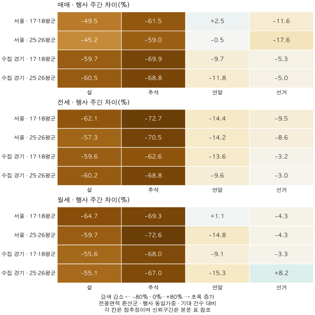
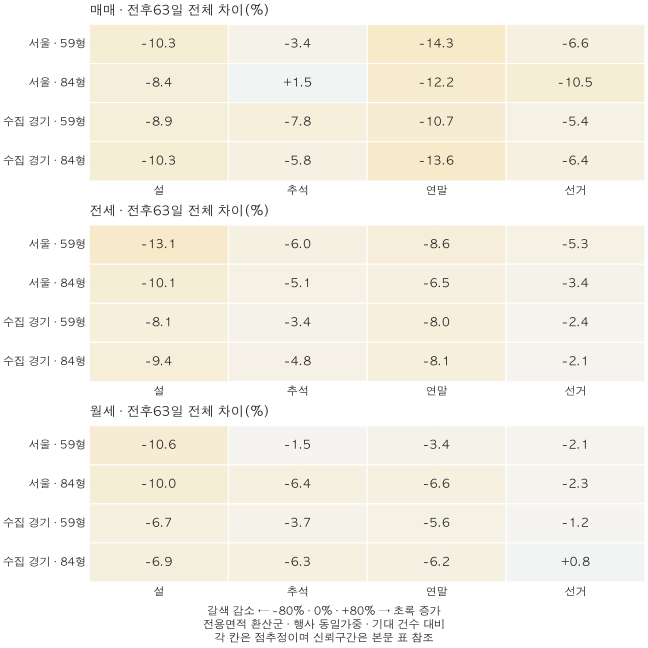

계절과 계약 달력 · 명절 주간과 주변 기간
명절에는 아파트 거래가 줄까? 설·추석·연말·선거 주간 비교
2022~2025년 서울·수집 경기 매매·전세·월세의 명절 거래량을 비교했습니다. 설·추석 주간의 감소와 전후63일 차이, 연말·선거의 혼합 결과와 모형의 한계를 확인합니다.
분석 기간 · 2022~2025년 · 완결63일 창14개 행사 | 자료 기준일 · 자료 2026-10-04 · 검증 2026-10-10
설·추석 연휴가 낀 주에는 아파트 계약이 뚜렷하게 줄었습니다. 2022~2025년의 완결된 행사들을 비교하면, 서울·수집 경기의 매매·전세·월세 두 면적군에서 설 주간은 기대 건수보다 45.19~64.67%, 추석 주간은 59.01~72.70% 적었습니다. 하지만 이 감소가 전후 기간에 모두 회복됐다는 결론은 나오지 않습니다. 연말과 선거 주간은 비교군에 따라 방향부터 달랐습니다.
어떤 계약과 행사 주간을 비교했나요?
지역은 서울 25구와 수집 경기 36개 시·구입니다. 인천이나 수집하지 않은 경기 지역은 포함하지 않았습니다. 매매·전세·월세를 각각 두 면적군으로 나눠 시장 3개 × 광역 2개 × 면적군 2개, 총 12개 비교군을 고정했습니다. 전국 아파트나 모든 전용면적의 평균은 아닙니다.
면적군은 이 블로그의 59형(전용 17·18평형)과 84형(전용 25·26평형)입니다. 전용면적(㎡)을 3.3058로 나눠 반올림한 평형으로 묶었으며, 범위와 묶는 이유는 용어집에 정리했습니다. 정확히 59㎡·84㎡인 집이나 공급면적 평형을 뜻하지 않습니다. 두 면적군 밖의 계약은 이 분석에 포함하지 않았습니다.
설·추석은 법정 휴일과 이어지는 주말을 하나의 연휴로 묶고 중간 날짜를 중심으로 삼았습니다. 날짜 수가 짝수면 앞쪽 중간 날짜입니다. 중심일 앞뒤 3일이 ‘행사 주간(0주)’입니다. 월요일부터 일요일까지의 달력 주간이나 실제 연휴 전체와 꼭 일치하지 않습니다. 선거는 투표일, 연말은 12월 28일을 중심으로 했습니다. 연말 12월 25~31일은 분석용 구간이며 7일 모두가 법정 공휴일이라는 뜻이 아닙니다.
각 행사에는 0주 앞뒤 4주를 붙여 63일을 비교했습니다. 전체 창이 2022~2025년에 들어오는 행사만 남겨 설 3회(2023~2025), 추석 4회(2022~2025), 연말 3회(2022~2024), 선거 4회(2022년 두 번·2024·2025년)를 분석했습니다. 2022년 설과 2025년 연말은 창이 자료 범위를 벗어나 제외했습니다. 선거 4회도 독립 연도는 3개입니다.
14개 행사의 날짜와 63일 창 펼치기
| 행사 | 행사 구간 | 중심일 | 63일 창 |
|---|---|---|---|
| 선거 2022-03-09 | 2022-03-09 ~ 2022-03-09 | 2022-03-09 | 2022-02-06 ~ 2022-04-09 |
| 선거 2022-06-01 | 2022-06-01 ~ 2022-06-01 | 2022-06-01 | 2022-05-01 ~ 2022-07-02 |
| 추석 2022-09-10 | 2022-09-09 ~ 2022-09-12 | 2022-09-10 | 2022-08-10 ~ 2022-10-11 |
| 연말 2022-12-28 | 2022-12-25 ~ 2022-12-31 | 2022-12-28 | 2022-11-27 ~ 2023-01-28 |
| 설 2023-01-22 | 2023-01-21 ~ 2023-01-24 | 2023-01-22 | 2022-12-22 ~ 2023-02-22 |
| 추석 2023-09-29 | 2023-09-28 ~ 2023-10-03 | 2023-09-30 | 2023-08-30 ~ 2023-10-31 |
| 연말 2023-12-28 | 2023-12-25 ~ 2023-12-31 | 2023-12-28 | 2023-11-27 ~ 2024-01-28 |
| 설 2024-02-10 | 2024-02-09 ~ 2024-02-12 | 2024-02-10 | 2024-01-10 ~ 2024-03-12 |
| 선거 2024-04-10 | 2024-04-10 ~ 2024-04-10 | 2024-04-10 | 2024-03-10 ~ 2024-05-11 |
| 추석 2024-09-17 | 2024-09-14 ~ 2024-09-18 | 2024-09-16 | 2024-08-16 ~ 2024-10-17 |
| 연말 2024-12-28 | 2024-12-25 ~ 2024-12-31 | 2024-12-28 | 2024-11-27 ~ 2025-01-28 |
| 설 2025-01-29 | 2025-01-25 ~ 2025-01-30 | 2025-01-27 | 2024-12-27 ~ 2025-02-27 |
| 선거 2025-06-03 | 2025-06-03 ~ 2025-06-03 | 2025-06-03 | 2025-05-03 ~ 2025-07-04 |
| 추석 2025-10-06 | 2025-10-03 ~ 2025-10-09 | 2025-10-06 | 2025-09-05 ~ 2025-11-06 |
단순히 전주와 비교하지 않았습니다
기대 건수는 지역별 연도 차이와 광역별 월·요일·분기, 월초·월말 각 3일의 패턴을 맞춘 별도 모형으로 계산했습니다. 세 시장과 두 면적군마다 모형을 따로 적합하고, 학습에서는 모든 달력 행사의 중심일 앞뒤 10일과 실제 공휴일을 제외했습니다. 학습할 때 각 연도에 같은 총가중치를 부여했습니다.
행사별 한 주 차이는 100×(실제 계약 건수÷기대 건수 −1)입니다. 그다음 같은 종류의 행사에 한 표씩 주어 평균했습니다. 따라서 표의 실제·기대 건수를 모두 합쳐 나눈 값과 다를 수 있습니다. 2022년처럼 선거가 두 번 있으면 두 행사로 평균하되, 불확실성 계산에서는 같은 연도로 묶었습니다.
설·추석 주간에는 얼마나 줄었나요?
설의 행사 주간 차이는 −64.67~−45.19%, 추석은 −72.70~−59.01%였습니다. 이 범위는 12개 비교군의 가장 낮고 높은 점추정값입니다. 신뢰구간이나 한 가구의 계약 확률이 아닙니다. ‘지난주보다 줄었다’가 아니라 모형이 계산한 해당 주의 기대 건수보다 적었다는 뜻입니다.

연말은 −15.33~+2.52%, 선거는 −17.57~+8.22%로 방향이 갈렸습니다. 설·추석에서 확인한 패턴을 ‘휴일이나 큰 행사가 있으면 언제나 거래가 줄어든다’로 넓혀 쓸 수 없습니다. 선거의 평균이 작거나 구간이 넓다는 사실도 ‘선거는 아무 영향이 없다’는 증거는 아닙니다.
전후 63일에는 줄었던 계약이 모두 회복됐나요?
행사 주간에 미뤄진 계약이 나중에 체결됐는지는 개별 계약의 이동 경로를 알아야 판단할 수 있습니다. 여기서는 그 대신 전후 63일의 실제·기대 총건수 차이를 행사별로 계산해 평균했습니다. 주간 변화율 9개를 더하거나 평균한 값이 아닙니다.
설의 63일 차이는 −13.13~−6.71%로 12개 비교군 모두 음수였습니다. 추석은 −7.79~+1.49%로 섞였습니다. 행사 주간의 큰 감소보다 전체 창의 차이가 작지만, 이것만으로 명절에 사라진 계약이 주변 주간에 모두 이연·회복됐다고 단정할 수 없습니다.

연말의 63일 차이는 −14.27~−3.44%, 선거는 −10.52~+0.78%였습니다. 이 값에도 명절·연말·선거 외의 같은 시기 시장 변화가 섞여 있습니다. 아래 신뢰구간은 연도별 변동을 반영하지만 기대모형 추정 자체의 오차를 모두 포함하지는 않습니다.
매매의 16개 비교와 신뢰구간 펼치기
| 지역·면적군·행사 | 행사 주간 차이 [95% 구간] | 63일 차이 [95% 구간] | 행사·연도 |
|---|---|---|---|
| 서울 · 59형(전용 17·18평형) · 설 | -49.51% [-79.95% ~ -19.06%] | -10.27% [-25.47% ~ +4.93%] | 3회 / 3년 |
| 서울 · 59형(전용 17·18평형) · 추석 | -61.52% [-100.00% ~ -9.33%] | -3.35% [-78.78% ~ +72.08%] | 4회 / 4년 |
| 서울 · 59형(전용 17·18평형) · 연말 | +2.52% [-22.92% ~ +27.95%] | -14.27% [-30.73% ~ +2.20%] | 3회 / 3년 |
| 서울 · 59형(전용 17·18평형) · 선거 | -11.60% [-80.58% ~ +57.39%] | -6.62% [-42.14% ~ +28.90%] | 4회 / 3년 |
| 서울 · 84형(전용 25·26평형) · 설 | -45.19% [-77.97% ~ -12.42%] | -8.44% [-29.74% ~ +12.87%] | 3회 / 3년 |
| 서울 · 84형(전용 25·26평형) · 추석 | -59.01% [-100.00% ~ -9.90%] | +1.49% [-73.05% ~ +76.03%] | 4회 / 4년 |
| 서울 · 84형(전용 25·26평형) · 연말 | -0.51% [-27.72% ~ +26.70%] | -12.19% [-32.77% ~ +8.39%] | 3회 / 3년 |
| 서울 · 84형(전용 25·26평형) · 선거 | -17.57% [-74.43% ~ +39.28%] | -10.52% [-53.48% ~ +32.44%] | 4회 / 3년 |
| 수집 경기 · 59형(전용 17·18평형) · 설 | -59.66% [-73.37% ~ -45.95%] | -8.94% [-19.54% ~ +1.67%] | 3회 / 3년 |
| 수집 경기 · 59형(전용 17·18평형) · 추석 | -69.92% [-87.17% ~ -52.67%] | -7.79% [-31.52% ~ +15.94%] | 4회 / 4년 |
| 수집 경기 · 59형(전용 17·18평형) · 연말 | -9.70% [-17.09% ~ -2.32%] | -10.74% [-33.84% ~ +12.36%] | 3회 / 3년 |
| 수집 경기 · 59형(전용 17·18평형) · 선거 | -5.26% [-58.93% ~ +48.40%] | -5.44% [-34.21% ~ +23.32%] | 4회 / 3년 |
| 수집 경기 · 84형(전용 25·26평형) · 설 | -60.45% [-71.19% ~ -49.71%] | -10.29% [-20.95% ~ +0.37%] | 3회 / 3년 |
| 수집 경기 · 84형(전용 25·26평형) · 추석 | -68.78% [-84.10% ~ -53.47%] | -5.75% [-28.70% ~ +17.20%] | 4회 / 4년 |
| 수집 경기 · 84형(전용 25·26평형) · 연말 | -11.83% [-34.53% ~ +10.86%] | -13.57% [-34.08% ~ +6.94%] | 3회 / 3년 |
| 수집 경기 · 84형(전용 25·26평형) · 선거 | -4.99% [-59.11% ~ +49.12%] | -6.44% [-31.83% ~ +18.95%] | 4회 / 3년 |
전세의 16개 비교와 신뢰구간 펼치기
| 지역·면적군·행사 | 행사 주간 차이 [95% 구간] | 63일 차이 [95% 구간] | 행사·연도 |
|---|---|---|---|
| 서울 · 59형(전용 17·18평형) · 설 | -62.12% [-68.36% ~ -55.88%] | -13.13% [-20.22% ~ -6.04%] | 3회 / 3년 |
| 서울 · 59형(전용 17·18평형) · 추석 | -72.70% [-90.58% ~ -54.81%] | -5.99% [-14.74% ~ +2.77%] | 4회 / 4년 |
| 서울 · 59형(전용 17·18평형) · 연말 | -14.41% [-23.58% ~ -5.24%] | -8.64% [-22.05% ~ +4.77%] | 3회 / 3년 |
| 서울 · 59형(전용 17·18평형) · 선거 | -9.54% [-27.02% ~ +7.93%] | -5.32% [-9.83% ~ -0.82%] | 4회 / 3년 |
| 서울 · 84형(전용 25·26평형) · 설 | -57.28% [-60.25% ~ -54.32%] | -10.11% [-19.65% ~ -0.58%] | 3회 / 3년 |
| 서울 · 84형(전용 25·26평형) · 추석 | -70.51% [-87.31% ~ -53.71%] | -5.13% [-11.14% ~ +0.89%] | 4회 / 4년 |
| 서울 · 84형(전용 25·26평형) · 연말 | -14.24% [-36.58% ~ +8.11%] | -6.46% [-16.54% ~ +3.62%] | 3회 / 3년 |
| 서울 · 84형(전용 25·26평형) · 선거 | -8.56% [-37.84% ~ +20.72%] | -3.41% [-7.26% ~ +0.44%] | 4회 / 3년 |
| 수집 경기 · 59형(전용 17·18평형) · 설 | -59.57% [-66.92% ~ -52.22%] | -8.08% [-17.09% ~ +0.92%] | 3회 / 3년 |
| 수집 경기 · 59형(전용 17·18평형) · 추석 | -62.64% [-90.33% ~ -34.95%] | -3.44% [-13.92% ~ +7.03%] | 4회 / 4년 |
| 수집 경기 · 59형(전용 17·18평형) · 연말 | -13.64% [-31.64% ~ +4.36%] | -8.01% [-19.44% ~ +3.41%] | 3회 / 3년 |
| 수집 경기 · 59형(전용 17·18평형) · 선거 | -3.22% [-22.98% ~ +16.54%] | -2.40% [-6.23% ~ +1.43%] | 4회 / 3년 |
| 수집 경기 · 84형(전용 25·26평형) · 설 | -60.23% [-76.24% ~ -44.21%] | -9.37% [-19.43% ~ +0.70%] | 3회 / 3년 |
| 수집 경기 · 84형(전용 25·26평형) · 추석 | -68.80% [-88.89% ~ -48.70%] | -4.84% [-14.18% ~ +4.50%] | 4회 / 4년 |
| 수집 경기 · 84형(전용 25·26평형) · 연말 | -9.62% [-30.18% ~ +10.94%] | -8.10% [-19.26% ~ +3.05%] | 3회 / 3년 |
| 수집 경기 · 84형(전용 25·26평형) · 선거 | -3.00% [-20.28% ~ +14.28%] | -2.11% [-4.44% ~ +0.22%] | 4회 / 3년 |
월세의 16개 비교와 신뢰구간 펼치기
| 지역·면적군·행사 | 행사 주간 차이 [95% 구간] | 63일 차이 [95% 구간] | 행사·연도 |
|---|---|---|---|
| 서울 · 59형(전용 17·18평형) · 설 | -64.67% [-74.60% ~ -54.75%] | -10.65% [-33.40% ~ +12.11%] | 3회 / 3년 |
| 서울 · 59형(전용 17·18평형) · 추석 | -69.30% [-88.61% ~ -49.99%] | -1.51% [-9.48% ~ +6.45%] | 4회 / 4년 |
| 서울 · 59형(전용 17·18평형) · 연말 | +1.14% [-86.32% ~ +88.59%] | -3.44% [-20.16% ~ +13.27%] | 3회 / 3년 |
| 서울 · 59형(전용 17·18평형) · 선거 | -4.34% [-26.49% ~ +17.80%] | -2.08% [-24.24% ~ +20.07%] | 4회 / 3년 |
| 서울 · 84형(전용 25·26평형) · 설 | -59.68% [-75.60% ~ -43.76%] | -10.02% [-17.26% ~ -2.77%] | 3회 / 3년 |
| 서울 · 84형(전용 25·26평형) · 추석 | -72.64% [-88.73% ~ -56.54%] | -6.45% [-12.16% ~ -0.74%] | 4회 / 4년 |
| 서울 · 84형(전용 25·26평형) · 연말 | -14.78% [-51.35% ~ +21.79%] | -6.63% [-8.36% ~ -4.90%] | 3회 / 3년 |
| 서울 · 84형(전용 25·26평형) · 선거 | -4.30% [-12.64% ~ +4.03%] | -2.33% [-4.42% ~ -0.24%] | 4회 / 3년 |
| 수집 경기 · 59형(전용 17·18평형) · 설 | -55.63% [-83.84% ~ -27.41%] | -6.71% [-21.05% ~ +7.63%] | 3회 / 3년 |
| 수집 경기 · 59형(전용 17·18평형) · 추석 | -67.98% [-98.41% ~ -37.55%] | -3.66% [-15.43% ~ +8.10%] | 4회 / 4년 |
| 수집 경기 · 59형(전용 17·18평형) · 연말 | -9.14% [-21.26% ~ +2.98%] | -5.58% [-12.72% ~ +1.56%] | 3회 / 3년 |
| 수집 경기 · 59형(전용 17·18평형) · 선거 | -3.25% [-9.30% ~ +2.79%] | -1.24% [-7.64% ~ +5.15%] | 4회 / 3년 |
| 수집 경기 · 84형(전용 25·26평형) · 설 | -55.08% [-77.26% ~ -32.89%] | -6.95% [-24.69% ~ +10.79%] | 3회 / 3년 |
| 수집 경기 · 84형(전용 25·26평형) · 추석 | -66.98% [-91.86% ~ -42.09%] | -6.28% [-18.57% ~ +6.02%] | 4회 / 4년 |
| 수집 경기 · 84형(전용 25·26평형) · 연말 | -15.33% [-24.14% ~ -6.51%] | -6.22% [-11.24% ~ -1.20%] | 3회 / 3년 |
| 수집 경기 · 84형(전용 25·26평형) · 선거 | +8.22% [-22.22% ~ +38.65%] | +0.78% [-12.26% ~ +13.81%] | 4회 / 3년 |
주변 기간을 학습에서 빼면 결과가 달라지나요?
가장 직접적인 반론은 ‘주변 주간을 평소 패턴의 학습에도 썼으니, 비교 기준이 행사 주변의 영향을 이미 흡수한 것 아닌가’입니다. 주분석에서는 중심일 앞뒤 10일만 학습에서 제외하므로 그 바깥의 주변 주간은 포함될 수 있습니다.
이에 각 행사의 63일 전체를 학습에서 빼고 분기 통제도 제외한 별도 모형으로 다시 비교했습니다. 이때 설의 63일 차이는 −22.51~−1.52%, 추석은 −6.20~+3.47%였습니다. 설의 음수 방향과 추석의 혼합 방향은 유지되지만 크기는 달라집니다. 이 결과 역시 명절의 인과효과나 거래 이연을 증명하지는 않습니다.
연말 행사 주간은 이 변형에서 −25.99~+5.22%, 선거의 63일 차이는 −6.02~+5.23%였습니다. 주분석의 숫자 하나를 고정된 법칙으로 읽기 어렵다는 반례입니다. 분기 통제만 뺀 모형, 학습 제외를 앞뒤 17일로 넓힌 모형도 별도로 확인했습니다.
그 밖에 명절 당일로 중심일 이동, 앞뒤 2주·3주로 창 축소, 건수 합계의 비율로 가중법 변경, 행사 하나씩 제외를 미리 정해 함께 계산했습니다. 앞뒤 2주·3주는 각각 35일·49일로 분모 자체가 달라집니다. 중심일을 바꾼 결과도 원래 행사 주간과 날짜가 같지 않습니다.
정책 겹침 또는 다른 행사·휴일 겹침을 제외한 결과는 모두 표본 부족이었습니다. 겹침을 제거해도 안정적이었다고 쓰지 않습니다. 설·연말에서 한 행사를 빼면 2개 연도만 남아 계산하지 않았으며, 선거는 2024년이나 2025년 행사를 빼면 같은 문제가 생깁니다. 추석의 한 행사 제외와 선거의 2022년 행사 하나 제외는 표본 조건을 통과했습니다. ‘표본 부족’은 0%나 영향 없음이 아닙니다.
12개 비교군의 사전 고정 민감도 648행 모두 보기
행사 주간과 전체 창을 분리했습니다. ‘기대 건수 가중’만 합산 실제÷합산 기대의 비율이며 나머지는 행사 동일가중입니다. 전세·월세를 합치거나 계산하지 못한 결과를 지우지 않았습니다.
매매 · 서울 · 59형(전용 17·18평형) 전체 민감도 펼치기
| 행사·변형 | 행사 주간 차이 | 전체 창 차이 | 행사·연도 | 계산 여부 |
|---|---|---|---|---|
| 설 · 주분석 | -49.51% | -10.27% | 3회 / 3년 | 계산 |
| 추석 · 주분석 | -61.52% | -3.35% | 4회 / 4년 | 계산 |
| 연말 · 주분석 | +2.52% | -14.27% | 3회 / 3년 | 계산 |
| 선거 · 주분석 | -11.60% | -6.62% | 4회 / 3년 | 계산 |
| 설 · 명절 당일 중심 | -55.08% | -9.31% | 3회 / 3년 | 계산 |
| 추석 · 명절 당일 중심 | -60.86% | -3.20% | 4회 / 4년 | 계산 |
| 연말 · 명절 당일 중심 | +2.52% | -14.27% | 3회 / 3년 | 계산 |
| 선거 · 명절 당일 중심 | -11.60% | -6.62% | 4회 / 3년 | 계산 |
| 설 · 분기 통제 제외 | -50.45% | -16.34% | 3회 / 3년 | 계산 |
| 추석 · 분기 통제 제외 | -59.88% | -7.98% | 4회 / 4년 | 계산 |
| 연말 · 분기 통제 제외 | -2.28% | -18.74% | 3회 / 3년 | 계산 |
| 선거 · 분기 통제 제외 | -4.64% | -2.14% | 4회 / 3년 | 계산 |
| 설 · 학습 제외 ±17일 | -50.48% | -15.93% | 3회 / 3년 | 계산 |
| 추석 · 학습 제외 ±17일 | -51.82% | -2.68% | 4회 / 4년 | 계산 |
| 연말 · 학습 제외 ±17일 | -5.31% | -15.87% | 3회 / 3년 | 계산 |
| 선거 · 학습 제외 ±17일 | -8.75% | -4.18% | 4회 / 3년 | 계산 |
| 설 · 63일 창 전체 제외·분기 통제 제외 | -51.01% | -16.67% | 3회 / 3년 | 계산 |
| 추석 · 63일 창 전체 제외·분기 통제 제외 | -56.40% | -1.80% | 4회 / 4년 | 계산 |
| 연말 · 63일 창 전체 제외·분기 통제 제외 | -3.81% | -23.23% | 3회 / 3년 | 계산 |
| 선거 · 63일 창 전체 제외·분기 통제 제외 | -0.38% | +0.31% | 4회 / 3년 | 계산 |
| 설 · 기대 건수 가중(합계 비율) | -51.38% | -11.12% | 3회 / 3년 | 계산 |
| 추석 · 기대 건수 가중(합계 비율) | -64.29% | +0.38% | 4회 / 4년 | 계산 |
| 연말 · 기대 건수 가중(합계 비율) | -2.56% | -13.75% | 3회 / 3년 | 계산 |
| 선거 · 기대 건수 가중(합계 비율) | +2.70% | +0.29% | 4회 / 3년 | 계산 |
| 설 · 전후2주·35일 | -49.51% | -18.40% | 3회 / 3년 | 계산 |
| 추석 · 전후2주·35일 | -61.52% | +5.64% | 4회 / 4년 | 계산 |
| 연말 · 전후2주·35일 | +2.52% | -18.52% | 3회 / 3년 | 계산 |
| 선거 · 전후2주·35일 | -11.60% | -6.57% | 4회 / 3년 | 계산 |
| 설 · 전후3주·49일 | -49.51% | -15.05% | 3회 / 3년 | 계산 |
| 추석 · 전후3주·49일 | -61.52% | -0.79% | 4회 / 4년 | 계산 |
| 연말 · 전후3주·49일 | +2.52% | -15.74% | 3회 / 3년 | 계산 |
| 선거 · 전후3주·49일 | -11.60% | -5.00% | 4회 / 3년 | 계산 |
| 설 · 정책 겹침 제외 | 지원 부족 | 지원 부족 | 2회 / 2년 | 표본 부족 |
| 추석 · 정책 겹침 제외 | 지원 부족 | 지원 부족 | 0회 / 0년 | 표본 부족 |
| 연말 · 정책 겹침 제외 | 지원 부족 | 지원 부족 | 2회 / 2년 | 표본 부족 |
| 선거 · 정책 겹침 제외 | 지원 부족 | 지원 부족 | 3회 / 2년 | 표본 부족 |
| 설 · 다른 행사·휴일 겹침 제외 | 지원 부족 | 지원 부족 | 0회 / 0년 | 표본 부족 |
| 추석 · 다른 행사·휴일 겹침 제외 | 지원 부족 | 지원 부족 | 1회 / 1년 | 표본 부족 |
| 연말 · 다른 행사·휴일 겹침 제외 | 지원 부족 | 지원 부족 | 0회 / 0년 | 표본 부족 |
| 선거 · 다른 행사·휴일 겹침 제외 | 지원 부족 | 지원 부족 | 0회 / 0년 | 표본 부족 |
| 선거 · 2022-03-09 선거 제외 | -9.60% | -8.16% | 3회 / 3년 | 계산 |
| 선거 · 2022-06-01 선거 제외 | -2.55% | -0.36% | 3회 / 3년 | 계산 |
| 추석 · 2022-09-10 추석 제외 | -58.18% | +4.00% | 3회 / 3년 | 계산 |
| 연말 · 2022-12-28 연말 제외 | 지원 부족 | 지원 부족 | 2회 / 2년 | 표본 부족 |
| 설 · 2023-01-22 설 제외 | 지원 부족 | 지원 부족 | 2회 / 2년 | 표본 부족 |
| 추석 · 2023-09-29 추석 제외 | -55.98% | -0.38% | 3회 / 3년 | 계산 |
| 연말 · 2023-12-28 연말 제외 | 지원 부족 | 지원 부족 | 2회 / 2년 | 표본 부족 |
| 설 · 2024-02-10 설 제외 | 지원 부족 | 지원 부족 | 2회 / 2년 | 표본 부족 |
| 선거 · 2024-04-10 선거 제외 | 지원 부족 | 지원 부족 | 3회 / 2년 | 표본 부족 |
| 추석 · 2024-09-17 추석 제외 | -54.18% | +9.27% | 3회 / 3년 | 계산 |
| 연말 · 2024-12-28 연말 제외 | 지원 부족 | 지원 부족 | 2회 / 2년 | 표본 부족 |
| 설 · 2025-01-29 설 제외 | 지원 부족 | 지원 부족 | 2회 / 2년 | 표본 부족 |
| 선거 · 2025-06-03 선거 제외 | 지원 부족 | 지원 부족 | 3회 / 2년 | 표본 부족 |
| 추석 · 2025-10-06 추석 제외 | -77.73% | -26.30% | 3회 / 3년 | 계산 |
매매 · 서울 · 84형(전용 25·26평형) 전체 민감도 펼치기
| 행사·변형 | 행사 주간 차이 | 전체 창 차이 | 행사·연도 | 계산 여부 |
|---|---|---|---|---|
| 설 · 주분석 | -45.19% | -8.44% | 3회 / 3년 | 계산 |
| 추석 · 주분석 | -59.01% | +1.49% | 4회 / 4년 | 계산 |
| 연말 · 주분석 | -0.51% | -12.19% | 3회 / 3년 | 계산 |
| 선거 · 주분석 | -17.57% | -10.52% | 4회 / 3년 | 계산 |
| 설 · 명절 당일 중심 | -51.31% | -7.55% | 3회 / 3년 | 계산 |
| 추석 · 명절 당일 중심 | -58.62% | +1.46% | 4회 / 4년 | 계산 |
| 연말 · 명절 당일 중심 | -0.51% | -12.19% | 3회 / 3년 | 계산 |
| 선거 · 명절 당일 중심 | -17.57% | -10.52% | 4회 / 3년 | 계산 |
| 설 · 분기 통제 제외 | -47.47% | -15.56% | 3회 / 3년 | 계산 |
| 추석 · 분기 통제 제외 | -56.87% | -4.11% | 4회 / 4년 | 계산 |
| 연말 · 분기 통제 제외 | -4.55% | -17.72% | 3회 / 3년 | 계산 |
| 선거 · 분기 통제 제외 | -12.25% | -7.68% | 4회 / 3년 | 계산 |
| 설 · 학습 제외 ±17일 | -50.16% | -18.48% | 3회 / 3년 | 계산 |
| 추석 · 학습 제외 ±17일 | -52.13% | +3.14% | 4회 / 4년 | 계산 |
| 연말 · 학습 제외 ±17일 | -13.10% | -19.85% | 3회 / 3년 | 계산 |
| 선거 · 학습 제외 ±17일 | -15.84% | -8.60% | 4회 / 3년 | 계산 |
| 설 · 63일 창 전체 제외·분기 통제 제외 | -48.45% | -16.36% | 3회 / 3년 | 계산 |
| 추석 · 63일 창 전체 제외·분기 통제 제외 | -51.76% | +3.47% | 4회 / 4년 | 계산 |
| 연말 · 63일 창 전체 제외·분기 통제 제외 | -4.72% | -22.78% | 3회 / 3년 | 계산 |
| 선거 · 63일 창 전체 제외·분기 통제 제외 | -8.84% | -5.13% | 4회 / 3년 | 계산 |
| 설 · 기대 건수 가중(합계 비율) | -48.88% | -10.86% | 3회 / 3년 | 계산 |
| 추석 · 기대 건수 가중(합계 비율) | -62.00% | +2.44% | 4회 / 4년 | 계산 |
| 연말 · 기대 건수 가중(합계 비율) | -5.22% | -15.20% | 3회 / 3년 | 계산 |
| 선거 · 기대 건수 가중(합계 비율) | -5.24% | -1.05% | 4회 / 3년 | 계산 |
| 설 · 전후2주·35일 | -45.19% | -16.83% | 3회 / 3년 | 계산 |
| 추석 · 전후2주·35일 | -59.01% | +10.96% | 4회 / 4년 | 계산 |
| 연말 · 전후2주·35일 | -0.51% | -15.93% | 3회 / 3년 | 계산 |
| 선거 · 전후2주·35일 | -17.57% | -12.34% | 4회 / 3년 | 계산 |
| 설 · 전후3주·49일 | -45.19% | -12.42% | 3회 / 3년 | 계산 |
| 추석 · 전후3주·49일 | -59.01% | +4.84% | 4회 / 4년 | 계산 |
| 연말 · 전후3주·49일 | -0.51% | -12.56% | 3회 / 3년 | 계산 |
| 선거 · 전후3주·49일 | -17.57% | -8.14% | 4회 / 3년 | 계산 |
| 설 · 정책 겹침 제외 | 지원 부족 | 지원 부족 | 2회 / 2년 | 표본 부족 |
| 추석 · 정책 겹침 제외 | 지원 부족 | 지원 부족 | 0회 / 0년 | 표본 부족 |
| 연말 · 정책 겹침 제외 | 지원 부족 | 지원 부족 | 2회 / 2년 | 표본 부족 |
| 선거 · 정책 겹침 제외 | 지원 부족 | 지원 부족 | 3회 / 2년 | 표본 부족 |
| 설 · 다른 행사·휴일 겹침 제외 | 지원 부족 | 지원 부족 | 0회 / 0년 | 표본 부족 |
| 추석 · 다른 행사·휴일 겹침 제외 | 지원 부족 | 지원 부족 | 1회 / 1년 | 표본 부족 |
| 연말 · 다른 행사·휴일 겹침 제외 | 지원 부족 | 지원 부족 | 0회 / 0년 | 표본 부족 |
| 선거 · 다른 행사·휴일 겹침 제외 | 지원 부족 | 지원 부족 | 0회 / 0년 | 표본 부족 |
| 선거 · 2022-03-09 선거 제외 | -10.63% | -9.23% | 3회 / 3년 | 계산 |
| 선거 · 2022-06-01 선거 제외 | -15.70% | -5.30% | 3회 / 3년 | 계산 |
| 추석 · 2022-09-10 추석 제외 | -56.28% | +6.06% | 3회 / 3년 | 계산 |
| 연말 · 2022-12-28 연말 제외 | 지원 부족 | 지원 부족 | 2회 / 2년 | 표본 부족 |
| 설 · 2023-01-22 설 제외 | 지원 부족 | 지원 부족 | 2회 / 2년 | 표본 부족 |
| 추석 · 2023-09-29 추석 제외 | -55.03% | +5.05% | 3회 / 3년 | 계산 |
| 연말 · 2023-12-28 연말 제외 | 지원 부족 | 지원 부족 | 2회 / 2년 | 표본 부족 |
| 설 · 2024-02-10 설 제외 | 지원 부족 | 지원 부족 | 2회 / 2년 | 표본 부족 |
| 선거 · 2024-04-10 선거 제외 | 지원 부족 | 지원 부족 | 3회 / 2년 | 표본 부족 |
| 추석 · 2024-09-17 추석 제외 | -50.71% | +15.66% | 3회 / 3년 | 계산 |
| 연말 · 2024-12-28 연말 제외 | 지원 부족 | 지원 부족 | 2회 / 2년 | 표본 부족 |
| 설 · 2025-01-29 설 제외 | 지원 부족 | 지원 부족 | 2회 / 2년 | 표본 부족 |
| 선거 · 2025-06-03 선거 제외 | 지원 부족 | 지원 부족 | 3회 / 2년 | 표본 부족 |
| 추석 · 2025-10-06 추석 제외 | -74.02% | -20.81% | 3회 / 3년 | 계산 |
매매 · 수집 경기 · 59형(전용 17·18평형) 전체 민감도 펼치기
| 행사·변형 | 행사 주간 차이 | 전체 창 차이 | 행사·연도 | 계산 여부 |
|---|---|---|---|---|
| 설 · 주분석 | -59.66% | -8.94% | 3회 / 3년 | 계산 |
| 추석 · 주분석 | -69.92% | -7.79% | 4회 / 4년 | 계산 |
| 연말 · 주분석 | -9.70% | -10.74% | 3회 / 3년 | 계산 |
| 선거 · 주분석 | -5.26% | -5.44% | 4회 / 3년 | 계산 |
| 설 · 명절 당일 중심 | -58.45% | -8.59% | 3회 / 3년 | 계산 |
| 추석 · 명절 당일 중심 | -69.15% | -7.78% | 4회 / 4년 | 계산 |
| 연말 · 명절 당일 중심 | -9.70% | -10.74% | 3회 / 3년 | 계산 |
| 선거 · 명절 당일 중심 | -5.26% | -5.44% | 4회 / 3년 | 계산 |
| 설 · 분기 통제 제외 | -64.97% | -20.65% | 3회 / 3년 | 계산 |
| 추석 · 분기 통제 제외 | -68.41% | -7.42% | 4회 / 4년 | 계산 |
| 연말 · 분기 통제 제외 | -20.98% | -22.20% | 3회 / 3년 | 계산 |
| 선거 · 분기 통제 제외 | +0.50% | -1.44% | 4회 / 3년 | 계산 |
| 설 · 학습 제외 ±17일 | -55.59% | -9.33% | 3회 / 3년 | 계산 |
| 추석 · 학습 제외 ±17일 | -71.62% | -11.15% | 4회 / 4년 | 계산 |
| 연말 · 학습 제외 ±17일 | -9.98% | -2.54% | 3회 / 3년 | 계산 |
| 선거 · 학습 제외 ±17일 | -4.14% | -5.54% | 4회 / 3년 | 계산 |
| 설 · 63일 창 전체 제외·분기 통제 제외 | -65.89% | -22.51% | 3회 / 3년 | 계산 |
| 추석 · 63일 창 전체 제외·분기 통제 제외 | -64.92% | -1.77% | 4회 / 4년 | 계산 |
| 연말 · 63일 창 전체 제외·분기 통제 제외 | -24.49% | -24.98% | 3회 / 3년 | 계산 |
| 선거 · 63일 창 전체 제외·분기 통제 제외 | +7.53% | +5.23% | 4회 / 3년 | 계산 |
| 설 · 기대 건수 가중(합계 비율) | -60.44% | -9.55% | 3회 / 3년 | 계산 |
| 추석 · 기대 건수 가중(합계 비율) | -73.25% | -6.29% | 4회 / 4년 | 계산 |
| 연말 · 기대 건수 가중(합계 비율) | -9.68% | -10.01% | 3회 / 3년 | 계산 |
| 선거 · 기대 건수 가중(합계 비율) | -2.29% | -3.79% | 4회 / 3년 | 계산 |
| 설 · 전후2주·35일 | -59.66% | -15.55% | 3회 / 3년 | 계산 |
| 추석 · 전후2주·35일 | -69.92% | -13.04% | 4회 / 4년 | 계산 |
| 연말 · 전후2주·35일 | -9.70% | -12.05% | 3회 / 3년 | 계산 |
| 선거 · 전후2주·35일 | -5.26% | -6.04% | 4회 / 3년 | 계산 |
| 설 · 전후3주·49일 | -59.66% | -11.72% | 3회 / 3년 | 계산 |
| 추석 · 전후3주·49일 | -69.92% | -9.51% | 4회 / 4년 | 계산 |
| 연말 · 전후3주·49일 | -9.70% | -9.99% | 3회 / 3년 | 계산 |
| 선거 · 전후3주·49일 | -5.26% | -3.56% | 4회 / 3년 | 계산 |
| 설 · 정책 겹침 제외 | 지원 부족 | 지원 부족 | 2회 / 2년 | 표본 부족 |
| 추석 · 정책 겹침 제외 | 지원 부족 | 지원 부족 | 0회 / 0년 | 표본 부족 |
| 연말 · 정책 겹침 제외 | 지원 부족 | 지원 부족 | 2회 / 2년 | 표본 부족 |
| 선거 · 정책 겹침 제외 | 지원 부족 | 지원 부족 | 3회 / 2년 | 표본 부족 |
| 설 · 다른 행사·휴일 겹침 제외 | 지원 부족 | 지원 부족 | 0회 / 0년 | 표본 부족 |
| 추석 · 다른 행사·휴일 겹침 제외 | 지원 부족 | 지원 부족 | 1회 / 1년 | 표본 부족 |
| 연말 · 다른 행사·휴일 겹침 제외 | 지원 부족 | 지원 부족 | 0회 / 0년 | 표본 부족 |
| 선거 · 다른 행사·휴일 겹침 제외 | 지원 부족 | 지원 부족 | 0회 / 0년 | 표본 부족 |
| 선거 · 2022-03-09 선거 제외 | -2.25% | -7.24% | 3회 / 3년 | 계산 |
| 선거 · 2022-06-01 선거 제외 | -3.08% | -1.76% | 3회 / 3년 | 계산 |
| 추석 · 2022-09-10 추석 제외 | -74.31% | -6.45% | 3회 / 3년 | 계산 |
| 연말 · 2022-12-28 연말 제외 | 지원 부족 | 지원 부족 | 2회 / 2년 | 표본 부족 |
| 설 · 2023-01-22 설 제외 | 지원 부족 | 지원 부족 | 2회 / 2년 | 표본 부족 |
| 추석 · 2023-09-29 추석 제외 | -68.25% | -7.53% | 3회 / 3년 | 계산 |
| 연말 · 2023-12-28 연말 제외 | 지원 부족 | 지원 부족 | 2회 / 2년 | 표본 부족 |
| 설 · 2024-02-10 설 제외 | 지원 부족 | 지원 부족 | 2회 / 2년 | 표본 부족 |
| 선거 · 2024-04-10 선거 제외 | 지원 부족 | 지원 부족 | 3회 / 2년 | 표본 부족 |
| 추석 · 2024-09-17 추석 제외 | -65.97% | -2.64% | 3회 / 3년 | 계산 |
| 연말 · 2024-12-28 연말 제외 | 지원 부족 | 지원 부족 | 2회 / 2년 | 표본 부족 |
| 설 · 2025-01-29 설 제외 | 지원 부족 | 지원 부족 | 2회 / 2년 | 표본 부족 |
| 선거 · 2025-06-03 선거 제외 | 지원 부족 | 지원 부족 | 3회 / 2년 | 표본 부족 |
| 추석 · 2025-10-06 추석 제외 | -71.16% | -14.55% | 3회 / 3년 | 계산 |
매매 · 수집 경기 · 84형(전용 25·26평형) 전체 민감도 펼치기
| 행사·변형 | 행사 주간 차이 | 전체 창 차이 | 행사·연도 | 계산 여부 |
|---|---|---|---|---|
| 설 · 주분석 | -60.45% | -10.29% | 3회 / 3년 | 계산 |
| 추석 · 주분석 | -68.78% | -5.75% | 4회 / 4년 | 계산 |
| 연말 · 주분석 | -11.83% | -13.57% | 3회 / 3년 | 계산 |
| 선거 · 주분석 | -4.99% | -6.44% | 4회 / 3년 | 계산 |
| 설 · 명절 당일 중심 | -61.47% | -9.78% | 3회 / 3년 | 계산 |
| 추석 · 명절 당일 중심 | -67.83% | -5.71% | 4회 / 4년 | 계산 |
| 연말 · 명절 당일 중심 | -11.83% | -13.57% | 3회 / 3년 | 계산 |
| 선거 · 명절 당일 중심 | -4.99% | -6.44% | 4회 / 3년 | 계산 |
| 설 · 분기 통제 제외 | -63.32% | -17.71% | 3회 / 3년 | 계산 |
| 추석 · 분기 통제 제외 | -66.67% | -5.07% | 4회 / 4년 | 계산 |
| 연말 · 분기 통제 제외 | -24.42% | -22.88% | 3회 / 3년 | 계산 |
| 선거 · 분기 통제 제외 | -2.46% | -4.84% | 4회 / 3년 | 계산 |
| 설 · 학습 제외 ±17일 | -59.80% | -13.06% | 3회 / 3년 | 계산 |
| 추석 · 학습 제외 ±17일 | -71.84% | -11.63% | 4회 / 4년 | 계산 |
| 연말 · 학습 제외 ±17일 | -14.72% | -10.83% | 3회 / 3년 | 계산 |
| 선거 · 학습 제외 ±17일 | -4.84% | -6.59% | 4회 / 3년 | 계산 |
| 설 · 63일 창 전체 제외·분기 통제 제외 | -63.98% | -17.91% | 3회 / 3년 | 계산 |
| 추석 · 63일 창 전체 제외·분기 통제 제외 | -63.22% | +0.26% | 4회 / 4년 | 계산 |
| 연말 · 63일 창 전체 제외·분기 통제 제외 | -25.99% | -25.49% | 3회 / 3년 | 계산 |
| 선거 · 63일 창 전체 제외·분기 통제 제외 | +1.18% | -1.70% | 4회 / 3년 | 계산 |
| 설 · 기대 건수 가중(합계 비율) | -60.31% | -10.58% | 3회 / 3년 | 계산 |
| 추석 · 기대 건수 가중(합계 비율) | -72.43% | -5.41% | 4회 / 4년 | 계산 |
| 연말 · 기대 건수 가중(합계 비율) | -14.53% | -13.22% | 3회 / 3년 | 계산 |
| 선거 · 기대 건수 가중(합계 비율) | +1.84% | -4.62% | 4회 / 3년 | 계산 |
| 설 · 전후2주·35일 | -60.45% | -17.13% | 3회 / 3년 | 계산 |
| 추석 · 전후2주·35일 | -68.78% | -12.03% | 4회 / 4년 | 계산 |
| 연말 · 전후2주·35일 | -11.83% | -15.69% | 3회 / 3년 | 계산 |
| 선거 · 전후2주·35일 | -4.99% | -6.30% | 4회 / 3년 | 계산 |
| 설 · 전후3주·49일 | -60.45% | -12.92% | 3회 / 3년 | 계산 |
| 추석 · 전후3주·49일 | -68.78% | -8.16% | 4회 / 4년 | 계산 |
| 연말 · 전후3주·49일 | -11.83% | -12.43% | 3회 / 3년 | 계산 |
| 선거 · 전후3주·49일 | -4.99% | -4.11% | 4회 / 3년 | 계산 |
| 설 · 정책 겹침 제외 | 지원 부족 | 지원 부족 | 2회 / 2년 | 표본 부족 |
| 추석 · 정책 겹침 제외 | 지원 부족 | 지원 부족 | 0회 / 0년 | 표본 부족 |
| 연말 · 정책 겹침 제외 | 지원 부족 | 지원 부족 | 2회 / 2년 | 표본 부족 |
| 선거 · 정책 겹침 제외 | 지원 부족 | 지원 부족 | 3회 / 2년 | 표본 부족 |
| 설 · 다른 행사·휴일 겹침 제외 | 지원 부족 | 지원 부족 | 0회 / 0년 | 표본 부족 |
| 추석 · 다른 행사·휴일 겹침 제외 | 지원 부족 | 지원 부족 | 1회 / 1년 | 표본 부족 |
| 연말 · 다른 행사·휴일 겹침 제외 | 지원 부족 | 지원 부족 | 0회 / 0년 | 표본 부족 |
| 선거 · 다른 행사·휴일 겹침 제외 | 지원 부족 | 지원 부족 | 0회 / 0년 | 표본 부족 |
| 선거 · 2022-03-09 선거 제외 | +0.71% | -7.18% | 3회 / 3년 | 계산 |
| 선거 · 2022-06-01 선거 제외 | -2.08% | -3.98% | 3회 / 3년 | 계산 |
| 추석 · 2022-09-10 추석 제외 | -72.87% | -5.38% | 3회 / 3년 | 계산 |
| 연말 · 2022-12-28 연말 제외 | 지원 부족 | 지원 부족 | 2회 / 2년 | 표본 부족 |
| 설 · 2023-01-22 설 제외 | 지원 부족 | 지원 부족 | 2회 / 2년 | 표본 부족 |
| 추석 · 2023-09-29 추석 제외 | -68.17% | -5.85% | 3회 / 3년 | 계산 |
| 연말 · 2023-12-28 연말 제외 | 지원 부족 | 지원 부족 | 2회 / 2년 | 표본 부족 |
| 설 · 2024-02-10 설 제외 | 지원 부족 | 지원 부족 | 2회 / 2년 | 표본 부족 |
| 선거 · 2024-04-10 선거 제외 | 지원 부족 | 지원 부족 | 3회 / 2년 | 표본 부족 |
| 추석 · 2024-09-17 추석 제외 | -65.07% | -0.01% | 3회 / 3년 | 계산 |
| 연말 · 2024-12-28 연말 제외 | 지원 부족 | 지원 부족 | 2회 / 2년 | 표본 부족 |
| 설 · 2025-01-29 설 제외 | 지원 부족 | 지원 부족 | 2회 / 2년 | 표본 부족 |
| 선거 · 2025-06-03 선거 제외 | 지원 부족 | 지원 부족 | 3회 / 2년 | 표본 부족 |
| 추석 · 2025-10-06 추석 제외 | -69.02% | -11.77% | 3회 / 3년 | 계산 |
전세 · 서울 · 59형(전용 17·18평형) 전체 민감도 펼치기
| 행사·변형 | 행사 주간 차이 | 전체 창 차이 | 행사·연도 | 계산 여부 |
|---|---|---|---|---|
| 설 · 주분석 | -62.12% | -13.13% | 3회 / 3년 | 계산 |
| 추석 · 주분석 | -72.70% | -5.99% | 4회 / 4년 | 계산 |
| 연말 · 주분석 | -14.41% | -8.64% | 3회 / 3년 | 계산 |
| 선거 · 주분석 | -9.54% | -5.32% | 4회 / 3년 | 계산 |
| 설 · 명절 당일 중심 | -65.50% | -13.30% | 3회 / 3년 | 계산 |
| 추석 · 명절 당일 중심 | -70.86% | -5.99% | 4회 / 4년 | 계산 |
| 연말 · 명절 당일 중심 | -14.41% | -8.64% | 3회 / 3년 | 계산 |
| 선거 · 명절 당일 중심 | -9.54% | -5.32% | 4회 / 3년 | 계산 |
| 설 · 분기 통제 제외 | -61.58% | -12.65% | 3회 / 3년 | 계산 |
| 추석 · 분기 통제 제외 | -70.35% | -2.62% | 4회 / 4년 | 계산 |
| 연말 · 분기 통제 제외 | -14.94% | -8.02% | 3회 / 3년 | 계산 |
| 선거 · 분기 통제 제외 | -10.49% | -5.99% | 4회 / 3년 | 계산 |
| 설 · 학습 제외 ±17일 | -63.03% | -16.08% | 3회 / 3년 | 계산 |
| 추석 · 학습 제외 ±17일 | -71.95% | -4.46% | 4회 / 4년 | 계산 |
| 연말 · 학습 제외 ±17일 | -10.39% | -7.05% | 3회 / 3년 | 계산 |
| 선거 · 학습 제외 ±17일 | -7.90% | -3.98% | 4회 / 3년 | 계산 |
| 설 · 63일 창 전체 제외·분기 통제 제외 | -61.27% | -11.74% | 3회 / 3년 | 계산 |
| 추석 · 63일 창 전체 제외·분기 통제 제외 | -69.70% | -1.40% | 4회 / 4년 | 계산 |
| 연말 · 63일 창 전체 제외·분기 통제 제외 | -15.17% | -7.43% | 3회 / 3년 | 계산 |
| 선거 · 63일 창 전체 제외·분기 통제 제외 | -10.25% | -6.02% | 4회 / 3년 | 계산 |
| 설 · 기대 건수 가중(합계 비율) | -62.20% | -13.20% | 3회 / 3년 | 계산 |
| 추석 · 기대 건수 가중(합계 비율) | -72.76% | -6.16% | 4회 / 4년 | 계산 |
| 연말 · 기대 건수 가중(합계 비율) | -14.59% | -8.60% | 3회 / 3년 | 계산 |
| 선거 · 기대 건수 가중(합계 비율) | -9.54% | -5.32% | 4회 / 3년 | 계산 |
| 설 · 전후2주·35일 | -62.12% | -18.14% | 3회 / 3년 | 계산 |
| 추석 · 전후2주·35일 | -72.70% | -12.91% | 4회 / 4년 | 계산 |
| 연말 · 전후2주·35일 | -14.41% | -8.42% | 3회 / 3년 | 계산 |
| 선거 · 전후2주·35일 | -9.54% | -4.90% | 4회 / 3년 | 계산 |
| 설 · 전후3주·49일 | -62.12% | -15.10% | 3회 / 3년 | 계산 |
| 추석 · 전후3주·49일 | -72.70% | -8.50% | 4회 / 4년 | 계산 |
| 연말 · 전후3주·49일 | -14.41% | -7.49% | 3회 / 3년 | 계산 |
| 선거 · 전후3주·49일 | -9.54% | -3.77% | 4회 / 3년 | 계산 |
| 설 · 정책 겹침 제외 | 지원 부족 | 지원 부족 | 2회 / 2년 | 표본 부족 |
| 추석 · 정책 겹침 제외 | 지원 부족 | 지원 부족 | 0회 / 0년 | 표본 부족 |
| 연말 · 정책 겹침 제외 | 지원 부족 | 지원 부족 | 2회 / 2년 | 표본 부족 |
| 선거 · 정책 겹침 제외 | 지원 부족 | 지원 부족 | 3회 / 2년 | 표본 부족 |
| 설 · 다른 행사·휴일 겹침 제외 | 지원 부족 | 지원 부족 | 0회 / 0년 | 표본 부족 |
| 추석 · 다른 행사·휴일 겹침 제외 | 지원 부족 | 지원 부족 | 1회 / 1년 | 표본 부족 |
| 연말 · 다른 행사·휴일 겹침 제외 | 지원 부족 | 지원 부족 | 0회 / 0년 | 표본 부족 |
| 선거 · 다른 행사·휴일 겹침 제외 | 지원 부족 | 지원 부족 | 0회 / 0년 | 표본 부족 |
| 선거 · 2022-03-09 선거 제외 | -7.45% | -6.04% | 3회 / 3년 | 계산 |
| 선거 · 2022-06-01 선거 제외 | -8.04% | -5.53% | 3회 / 3년 | 계산 |
| 추석 · 2022-09-10 추석 제외 | -75.98% | -8.55% | 3회 / 3년 | 계산 |
| 연말 · 2022-12-28 연말 제외 | 지원 부족 | 지원 부족 | 2회 / 2년 | 표본 부족 |
| 설 · 2023-01-22 설 제외 | 지원 부족 | 지원 부족 | 2회 / 2년 | 표본 부족 |
| 추석 · 2023-09-29 추석 제외 | -71.27% | -5.93% | 3회 / 3년 | 계산 |
| 연말 · 2023-12-28 연말 제외 | 지원 부족 | 지원 부족 | 2회 / 2년 | 표본 부족 |
| 설 · 2024-02-10 설 제외 | 지원 부족 | 지원 부족 | 2회 / 2년 | 표본 부족 |
| 선거 · 2024-04-10 선거 제외 | 지원 부족 | 지원 부족 | 3회 / 2년 | 표본 부족 |
| 추석 · 2024-09-17 추석 제외 | -75.48% | -4.31% | 3회 / 3년 | 계산 |
| 연말 · 2024-12-28 연말 제외 | 지원 부족 | 지원 부족 | 2회 / 2년 | 표본 부족 |
| 설 · 2025-01-29 설 제외 | 지원 부족 | 지원 부족 | 2회 / 2년 | 표본 부족 |
| 선거 · 2025-06-03 선거 제외 | 지원 부족 | 지원 부족 | 3회 / 2년 | 표본 부족 |
| 추석 · 2025-10-06 추석 제외 | -68.06% | -5.15% | 3회 / 3년 | 계산 |
전세 · 서울 · 84형(전용 25·26평형) 전체 민감도 펼치기
| 행사·변형 | 행사 주간 차이 | 전체 창 차이 | 행사·연도 | 계산 여부 |
|---|---|---|---|---|
| 설 · 주분석 | -57.28% | -10.11% | 3회 / 3년 | 계산 |
| 추석 · 주분석 | -70.51% | -5.13% | 4회 / 4년 | 계산 |
| 연말 · 주분석 | -14.24% | -6.46% | 3회 / 3년 | 계산 |
| 선거 · 주분석 | -8.56% | -3.41% | 4회 / 3년 | 계산 |
| 설 · 명절 당일 중심 | -59.75% | -10.18% | 3회 / 3년 | 계산 |
| 추석 · 명절 당일 중심 | -68.19% | -5.13% | 4회 / 4년 | 계산 |
| 연말 · 명절 당일 중심 | -14.24% | -6.46% | 3회 / 3년 | 계산 |
| 선거 · 명절 당일 중심 | -8.56% | -3.41% | 4회 / 3년 | 계산 |
| 설 · 분기 통제 제외 | -58.04% | -11.58% | 3회 / 3년 | 계산 |
| 추석 · 분기 통제 제외 | -69.15% | -3.04% | 4회 / 4년 | 계산 |
| 연말 · 분기 통제 제외 | -15.51% | -7.82% | 3회 / 3년 | 계산 |
| 선거 · 분기 통제 제외 | -8.03% | -2.43% | 4회 / 3년 | 계산 |
| 설 · 학습 제외 ±17일 | -58.26% | -12.31% | 3회 / 3년 | 계산 |
| 추석 · 학습 제외 ±17일 | -70.04% | -4.52% | 4회 / 4년 | 계산 |
| 연말 · 학습 제외 ±17일 | -11.08% | -5.59% | 3회 / 3년 | 계산 |
| 선거 · 학습 제외 ±17일 | -8.75% | -4.27% | 4회 / 3년 | 계산 |
| 설 · 63일 창 전체 제외·분기 통제 제외 | -58.44% | -12.05% | 3회 / 3년 | 계산 |
| 추석 · 63일 창 전체 제외·분기 통제 제외 | -68.59% | -1.23% | 4회 / 4년 | 계산 |
| 연말 · 63일 창 전체 제외·분기 통제 제외 | -14.63% | -7.40% | 3회 / 3년 | 계산 |
| 선거 · 63일 창 전체 제외·분기 통제 제외 | -7.40% | -1.72% | 4회 / 3년 | 계산 |
| 설 · 기대 건수 가중(합계 비율) | -57.27% | -10.23% | 3회 / 3년 | 계산 |
| 추석 · 기대 건수 가중(합계 비율) | -71.15% | -5.23% | 4회 / 4년 | 계산 |
| 연말 · 기대 건수 가중(합계 비율) | -15.16% | -6.34% | 3회 / 3년 | 계산 |
| 선거 · 기대 건수 가중(합계 비율) | -8.65% | -3.39% | 4회 / 3년 | 계산 |
| 설 · 전후2주·35일 | -57.28% | -14.82% | 3회 / 3년 | 계산 |
| 추석 · 전후2주·35일 | -70.51% | -10.73% | 4회 / 4년 | 계산 |
| 연말 · 전후2주·35일 | -14.24% | -6.79% | 3회 / 3년 | 계산 |
| 선거 · 전후2주·35일 | -8.56% | -4.47% | 4회 / 3년 | 계산 |
| 설 · 전후3주·49일 | -57.28% | -12.26% | 3회 / 3년 | 계산 |
| 추석 · 전후3주·49일 | -70.51% | -6.47% | 4회 / 4년 | 계산 |
| 연말 · 전후3주·49일 | -14.24% | -5.28% | 3회 / 3년 | 계산 |
| 선거 · 전후3주·49일 | -8.56% | -2.79% | 4회 / 3년 | 계산 |
| 설 · 정책 겹침 제외 | 지원 부족 | 지원 부족 | 2회 / 2년 | 표본 부족 |
| 추석 · 정책 겹침 제외 | 지원 부족 | 지원 부족 | 0회 / 0년 | 표본 부족 |
| 연말 · 정책 겹침 제외 | 지원 부족 | 지원 부족 | 2회 / 2년 | 표본 부족 |
| 선거 · 정책 겹침 제외 | 지원 부족 | 지원 부족 | 3회 / 2년 | 표본 부족 |
| 설 · 다른 행사·휴일 겹침 제외 | 지원 부족 | 지원 부족 | 0회 / 0년 | 표본 부족 |
| 추석 · 다른 행사·휴일 겹침 제외 | 지원 부족 | 지원 부족 | 1회 / 1년 | 표본 부족 |
| 연말 · 다른 행사·휴일 겹침 제외 | 지원 부족 | 지원 부족 | 0회 / 0년 | 표본 부족 |
| 선거 · 다른 행사·휴일 겹침 제외 | 지원 부족 | 지원 부족 | 0회 / 0년 | 표본 부족 |
| 선거 · 2022-03-09 선거 제외 | -4.94% | -3.16% | 3회 / 3년 | 계산 |
| 선거 · 2022-06-01 선거 제외 | -6.13% | -2.89% | 3회 / 3년 | 계산 |
| 추석 · 2022-09-10 추석 제외 | -74.17% | -6.60% | 3회 / 3년 | 계산 |
| 연말 · 2022-12-28 연말 제외 | 지원 부족 | 지원 부족 | 2회 / 2년 | 표본 부족 |
| 설 · 2023-01-22 설 제외 | 지원 부족 | 지원 부족 | 2회 / 2년 | 표본 부족 |
| 추석 · 2023-09-29 추석 제외 | -68.94% | -4.47% | 3회 / 3년 | 계산 |
| 연말 · 2023-12-28 연말 제외 | 지원 부족 | 지원 부족 | 2회 / 2년 | 표본 부족 |
| 설 · 2024-02-10 설 제외 | 지원 부족 | 지원 부족 | 2회 / 2년 | 표본 부족 |
| 선거 · 2024-04-10 선거 제외 | 지원 부족 | 지원 부족 | 3회 / 2년 | 표본 부족 |
| 추석 · 2024-09-17 추석 제외 | -72.55% | -3.77% | 3회 / 3년 | 계산 |
| 연말 · 2024-12-28 연말 제외 | 지원 부족 | 지원 부족 | 2회 / 2년 | 표본 부족 |
| 설 · 2025-01-29 설 제외 | 지원 부족 | 지원 부족 | 2회 / 2년 | 표본 부족 |
| 선거 · 2025-06-03 선거 제외 | 지원 부족 | 지원 부족 | 3회 / 2년 | 표본 부족 |
| 추석 · 2025-10-06 추석 제외 | -66.37% | -5.67% | 3회 / 3년 | 계산 |
전세 · 수집 경기 · 59형(전용 17·18평형) 전체 민감도 펼치기
| 행사·변형 | 행사 주간 차이 | 전체 창 차이 | 행사·연도 | 계산 여부 |
|---|---|---|---|---|
| 설 · 주분석 | -59.57% | -8.08% | 3회 / 3년 | 계산 |
| 추석 · 주분석 | -62.64% | -3.44% | 4회 / 4년 | 계산 |
| 연말 · 주분석 | -13.64% | -8.01% | 3회 / 3년 | 계산 |
| 선거 · 주분석 | -3.22% | -2.40% | 4회 / 3년 | 계산 |
| 설 · 명절 당일 중심 | -60.83% | -7.79% | 3회 / 3년 | 계산 |
| 추석 · 명절 당일 중심 | -62.15% | -3.45% | 4회 / 4년 | 계산 |
| 연말 · 명절 당일 중심 | -13.64% | -8.01% | 3회 / 3년 | 계산 |
| 선거 · 명절 당일 중심 | -3.22% | -2.40% | 4회 / 3년 | 계산 |
| 설 · 분기 통제 제외 | -59.12% | -7.18% | 3회 / 3년 | 계산 |
| 추석 · 분기 통제 제외 | -61.39% | -2.49% | 4회 / 4년 | 계산 |
| 연말 · 분기 통제 제외 | -14.15% | -7.79% | 3회 / 3년 | 계산 |
| 선거 · 분기 통제 제외 | -3.24% | -2.40% | 4회 / 3년 | 계산 |
| 설 · 학습 제외 ±17일 | -55.63% | -3.24% | 3회 / 3년 | 계산 |
| 추석 · 학습 제외 ±17일 | -60.59% | -0.63% | 4회 / 4년 | 계산 |
| 연말 · 학습 제외 ±17일 | -14.65% | -2.37% | 3회 / 3년 | 계산 |
| 선거 · 학습 제외 ±17일 | -5.23% | -4.32% | 4회 / 3년 | 계산 |
| 설 · 63일 창 전체 제외·분기 통제 제외 | -58.95% | -5.85% | 3회 / 3년 | 계산 |
| 추석 · 63일 창 전체 제외·분기 통제 제외 | -60.35% | -1.37% | 4회 / 4년 | 계산 |
| 연말 · 63일 창 전체 제외·분기 통제 제외 | -13.55% | -7.36% | 3회 / 3년 | 계산 |
| 선거 · 63일 창 전체 제외·분기 통제 제외 | -2.60% | -2.26% | 4회 / 3년 | 계산 |
| 설 · 기대 건수 가중(합계 비율) | -59.40% | -8.03% | 3회 / 3년 | 계산 |
| 추석 · 기대 건수 가중(합계 비율) | -61.83% | -3.47% | 4회 / 4년 | 계산 |
| 연말 · 기대 건수 가중(합계 비율) | -13.67% | -7.99% | 3회 / 3년 | 계산 |
| 선거 · 기대 건수 가중(합계 비율) | -3.85% | -2.43% | 4회 / 3년 | 계산 |
| 설 · 전후2주·35일 | -59.57% | -12.70% | 3회 / 3년 | 계산 |
| 추석 · 전후2주·35일 | -62.64% | -9.00% | 4회 / 4년 | 계산 |
| 연말 · 전후2주·35일 | -13.64% | -8.05% | 3회 / 3년 | 계산 |
| 선거 · 전후2주·35일 | -3.22% | -3.79% | 4회 / 3년 | 계산 |
| 설 · 전후3주·49일 | -59.57% | -9.40% | 3회 / 3년 | 계산 |
| 추석 · 전후3주·49일 | -62.64% | -4.99% | 4회 / 4년 | 계산 |
| 연말 · 전후3주·49일 | -13.64% | -6.82% | 3회 / 3년 | 계산 |
| 선거 · 전후3주·49일 | -3.22% | -1.53% | 4회 / 3년 | 계산 |
| 설 · 정책 겹침 제외 | 지원 부족 | 지원 부족 | 2회 / 2년 | 표본 부족 |
| 추석 · 정책 겹침 제외 | 지원 부족 | 지원 부족 | 0회 / 0년 | 표본 부족 |
| 연말 · 정책 겹침 제외 | 지원 부족 | 지원 부족 | 2회 / 2년 | 표본 부족 |
| 선거 · 정책 겹침 제외 | 지원 부족 | 지원 부족 | 3회 / 2년 | 표본 부족 |
| 설 · 다른 행사·휴일 겹침 제외 | 지원 부족 | 지원 부족 | 0회 / 0년 | 표본 부족 |
| 추석 · 다른 행사·휴일 겹침 제외 | 지원 부족 | 지원 부족 | 1회 / 1년 | 표본 부족 |
| 연말 · 다른 행사·휴일 겹침 제외 | 지원 부족 | 지원 부족 | 0회 / 0년 | 표본 부족 |
| 선거 · 다른 행사·휴일 겹침 제외 | 지원 부족 | 지원 부족 | 0회 / 0년 | 표본 부족 |
| 선거 · 2022-03-09 선거 제외 | +0.61% | -2.57% | 3회 / 3년 | 계산 |
| 선거 · 2022-06-01 선거 제외 | -3.52% | -2.06% | 3회 / 3년 | 계산 |
| 추석 · 2022-09-10 추석 제외 | -65.54% | -5.94% | 3회 / 3년 | 계산 |
| 연말 · 2022-12-28 연말 제외 | 지원 부족 | 지원 부족 | 2회 / 2년 | 표본 부족 |
| 설 · 2023-01-22 설 제외 | 지원 부족 | 지원 부족 | 2회 / 2년 | 표본 부족 |
| 추석 · 2023-09-29 추석 제외 | -59.62% | -1.84% | 3회 / 3년 | 계산 |
| 연말 · 2023-12-28 연말 제외 | 지원 부족 | 지원 부족 | 2회 / 2년 | 표본 부족 |
| 설 · 2024-02-10 설 제외 | 지원 부족 | 지원 부족 | 2회 / 2년 | 표본 부족 |
| 선거 · 2024-04-10 선거 제외 | 지원 부족 | 지원 부족 | 3회 / 2년 | 표본 부족 |
| 추석 · 2024-09-17 추석 제외 | -69.16% | -4.61% | 3회 / 3년 | 계산 |
| 연말 · 2024-12-28 연말 제외 | 지원 부족 | 지원 부족 | 2회 / 2년 | 표본 부족 |
| 설 · 2025-01-29 설 제외 | 지원 부족 | 지원 부족 | 2회 / 2년 | 표본 부족 |
| 선거 · 2025-06-03 선거 제외 | 지원 부족 | 지원 부족 | 3회 / 2년 | 표본 부족 |
| 추석 · 2025-10-06 추석 제외 | -56.24% | -1.37% | 3회 / 3년 | 계산 |
전세 · 수집 경기 · 84형(전용 25·26평형) 전체 민감도 펼치기
| 행사·변형 | 행사 주간 차이 | 전체 창 차이 | 행사·연도 | 계산 여부 |
|---|---|---|---|---|
| 설 · 주분석 | -60.23% | -9.37% | 3회 / 3년 | 계산 |
| 추석 · 주분석 | -68.80% | -4.84% | 4회 / 4년 | 계산 |
| 연말 · 주분석 | -9.62% | -8.10% | 3회 / 3년 | 계산 |
| 선거 · 주분석 | -3.00% | -2.11% | 4회 / 3년 | 계산 |
| 설 · 명절 당일 중심 | -60.59% | -9.42% | 3회 / 3년 | 계산 |
| 추석 · 명절 당일 중심 | -66.42% | -4.84% | 4회 / 4년 | 계산 |
| 연말 · 명절 당일 중심 | -9.62% | -8.10% | 3회 / 3년 | 계산 |
| 선거 · 명절 당일 중심 | -3.00% | -2.11% | 4회 / 3년 | 계산 |
| 설 · 분기 통제 제외 | -59.87% | -8.87% | 3회 / 3년 | 계산 |
| 추석 · 분기 통제 제외 | -67.91% | -3.63% | 4회 / 4년 | 계산 |
| 연말 · 분기 통제 제외 | -10.92% | -8.20% | 3회 / 3년 | 계산 |
| 선거 · 분기 통제 제외 | -3.23% | -2.38% | 4회 / 3년 | 계산 |
| 설 · 학습 제외 ±17일 | -58.65% | -7.60% | 3회 / 3년 | 계산 |
| 추석 · 학습 제외 ±17일 | -67.20% | -1.89% | 4회 / 4년 | 계산 |
| 연말 · 학습 제외 ±17일 | -9.43% | -4.56% | 3회 / 3년 | 계산 |
| 선거 · 학습 제외 ±17일 | -4.12% | -2.68% | 4회 / 3년 | 계산 |
| 설 · 63일 창 전체 제외·분기 통제 제외 | -59.91% | -8.10% | 3회 / 3년 | 계산 |
| 추석 · 63일 창 전체 제외·분기 통제 제외 | -67.14% | -2.32% | 4회 / 4년 | 계산 |
| 연말 · 63일 창 전체 제외·분기 통제 제외 | -10.22% | -7.89% | 3회 / 3년 | 계산 |
| 선거 · 63일 창 전체 제외·분기 통제 제외 | -2.89% | -2.43% | 4회 / 3년 | 계산 |
| 설 · 기대 건수 가중(합계 비율) | -59.99% | -9.41% | 3회 / 3년 | 계산 |
| 추석 · 기대 건수 가중(합계 비율) | -69.04% | -4.97% | 4회 / 4년 | 계산 |
| 연말 · 기대 건수 가중(합계 비율) | -10.00% | -8.08% | 3회 / 3년 | 계산 |
| 선거 · 기대 건수 가중(합계 비율) | -3.17% | -2.08% | 4회 / 3년 | 계산 |
| 설 · 전후2주·35일 | -60.23% | -15.00% | 3회 / 3년 | 계산 |
| 추석 · 전후2주·35일 | -68.80% | -10.58% | 4회 / 4년 | 계산 |
| 연말 · 전후2주·35일 | -9.62% | -7.31% | 3회 / 3년 | 계산 |
| 선거 · 전후2주·35일 | -3.00% | -2.50% | 4회 / 3년 | 계산 |
| 설 · 전후3주·49일 | -60.23% | -11.64% | 3회 / 3년 | 계산 |
| 추석 · 전후3주·49일 | -68.80% | -6.05% | 4회 / 4년 | 계산 |
| 연말 · 전후3주·49일 | -9.62% | -6.01% | 3회 / 3년 | 계산 |
| 선거 · 전후3주·49일 | -3.00% | -1.21% | 4회 / 3년 | 계산 |
| 설 · 정책 겹침 제외 | 지원 부족 | 지원 부족 | 2회 / 2년 | 표본 부족 |
| 추석 · 정책 겹침 제외 | 지원 부족 | 지원 부족 | 0회 / 0년 | 표본 부족 |
| 연말 · 정책 겹침 제외 | 지원 부족 | 지원 부족 | 2회 / 2년 | 표본 부족 |
| 선거 · 정책 겹침 제외 | 지원 부족 | 지원 부족 | 3회 / 2년 | 표본 부족 |
| 설 · 다른 행사·휴일 겹침 제외 | 지원 부족 | 지원 부족 | 0회 / 0년 | 표본 부족 |
| 추석 · 다른 행사·휴일 겹침 제외 | 지원 부족 | 지원 부족 | 1회 / 1년 | 표본 부족 |
| 연말 · 다른 행사·휴일 겹침 제외 | 지원 부족 | 지원 부족 | 0회 / 0년 | 표본 부족 |
| 선거 · 다른 행사·휴일 겹침 제외 | 지원 부족 | 지원 부족 | 0회 / 0년 | 표본 부족 |
| 선거 · 2022-03-09 선거 제외 | -1.04% | -2.54% | 3회 / 3년 | 계산 |
| 선거 · 2022-06-01 선거 제외 | -2.11% | -1.74% | 3회 / 3년 | 계산 |
| 추석 · 2022-09-10 추석 제외 | -74.04% | -7.52% | 3회 / 3년 | 계산 |
| 연말 · 2022-12-28 연말 제외 | 지원 부족 | 지원 부족 | 2회 / 2년 | 표본 부족 |
| 설 · 2023-01-22 설 제외 | 지원 부족 | 지원 부족 | 2회 / 2년 | 표본 부족 |
| 추석 · 2023-09-29 추석 제외 | -67.47% | -4.61% | 3회 / 3년 | 계산 |
| 연말 · 2023-12-28 연말 제외 | 지원 부족 | 지원 부족 | 2회 / 2년 | 표본 부족 |
| 설 · 2024-02-10 설 제외 | 지원 부족 | 지원 부족 | 2회 / 2년 | 표본 부족 |
| 선거 · 2024-04-10 선거 제외 | 지원 부족 | 지원 부족 | 3회 / 2년 | 표본 부족 |
| 추석 · 2024-09-17 추석 제외 | -69.70% | -4.42% | 3회 / 3년 | 계산 |
| 연말 · 2024-12-28 연말 제외 | 지원 부족 | 지원 부족 | 2회 / 2년 | 표본 부족 |
| 설 · 2025-01-29 설 제외 | 지원 부족 | 지원 부족 | 2회 / 2년 | 표본 부족 |
| 선거 · 2025-06-03 선거 제외 | 지원 부족 | 지원 부족 | 3회 / 2년 | 표본 부족 |
| 추석 · 2025-10-06 추석 제외 | -63.99% | -2.82% | 3회 / 3년 | 계산 |
월세 · 서울 · 59형(전용 17·18평형) 전체 민감도 펼치기
| 행사·변형 | 행사 주간 차이 | 전체 창 차이 | 행사·연도 | 계산 여부 |
|---|---|---|---|---|
| 설 · 주분석 | -64.67% | -10.65% | 3회 / 3년 | 계산 |
| 추석 · 주분석 | -69.30% | -1.51% | 4회 / 4년 | 계산 |
| 연말 · 주분석 | +1.14% | -3.44% | 3회 / 3년 | 계산 |
| 선거 · 주분석 | -4.34% | -2.08% | 4회 / 3년 | 계산 |
| 설 · 명절 당일 중심 | -68.27% | -10.81% | 3회 / 3년 | 계산 |
| 추석 · 명절 당일 중심 | -67.68% | -1.74% | 4회 / 4년 | 계산 |
| 연말 · 명절 당일 중심 | +1.14% | -3.44% | 3회 / 3년 | 계산 |
| 선거 · 명절 당일 중심 | -4.34% | -2.08% | 4회 / 3년 | 계산 |
| 설 · 분기 통제 제외 | -63.57% | -7.05% | 3회 / 3년 | 계산 |
| 추석 · 분기 통제 제외 | -68.22% | +0.12% | 4회 / 4년 | 계산 |
| 연말 · 분기 통제 제외 | +1.75% | -2.92% | 3회 / 3년 | 계산 |
| 선거 · 분기 통제 제외 | -7.42% | -4.02% | 4회 / 3년 | 계산 |
| 설 · 학습 제외 ±17일 | -65.47% | -13.03% | 3회 / 3년 | 계산 |
| 추석 · 학습 제외 ±17일 | -66.95% | +2.99% | 4회 / 4년 | 계산 |
| 연말 · 학습 제외 ±17일 | -0.60% | -4.52% | 3회 / 3년 | 계산 |
| 선거 · 학습 제외 ±17일 | -1.63% | +2.41% | 4회 / 3년 | 계산 |
| 설 · 63일 창 전체 제외·분기 통제 제외 | -63.24% | -3.93% | 3회 / 3년 | 계산 |
| 추석 · 63일 창 전체 제외·분기 통제 제외 | -67.31% | +2.60% | 4회 / 4년 | 계산 |
| 연말 · 63일 창 전체 제외·분기 통제 제외 | +5.22% | -1.08% | 3회 / 3년 | 계산 |
| 선거 · 63일 창 전체 제외·분기 통제 제외 | -8.32% | -6.00% | 4회 / 3년 | 계산 |
| 설 · 기대 건수 가중(합계 비율) | -65.07% | -10.63% | 3회 / 3년 | 계산 |
| 추석 · 기대 건수 가중(합계 비율) | -70.08% | -1.48% | 4회 / 4년 | 계산 |
| 연말 · 기대 건수 가중(합계 비율) | +2.34% | -3.20% | 3회 / 3년 | 계산 |
| 선거 · 기대 건수 가중(합계 비율) | -4.59% | -2.43% | 4회 / 3년 | 계산 |
| 설 · 전후2주·35일 | -64.67% | -19.92% | 3회 / 3년 | 계산 |
| 추석 · 전후2주·35일 | -69.30% | -5.46% | 4회 / 4년 | 계산 |
| 연말 · 전후2주·35일 | +1.14% | -3.55% | 3회 / 3년 | 계산 |
| 선거 · 전후2주·35일 | -4.34% | +1.49% | 4회 / 3년 | 계산 |
| 설 · 전후3주·49일 | -64.67% | -15.59% | 3회 / 3년 | 계산 |
| 추석 · 전후3주·49일 | -69.30% | -2.13% | 4회 / 4년 | 계산 |
| 연말 · 전후3주·49일 | +1.14% | -3.84% | 3회 / 3년 | 계산 |
| 선거 · 전후3주·49일 | -4.34% | -0.42% | 4회 / 3년 | 계산 |
| 설 · 정책 겹침 제외 | 지원 부족 | 지원 부족 | 2회 / 2년 | 표본 부족 |
| 추석 · 정책 겹침 제외 | 지원 부족 | 지원 부족 | 0회 / 0년 | 표본 부족 |
| 연말 · 정책 겹침 제외 | 지원 부족 | 지원 부족 | 2회 / 2년 | 표본 부족 |
| 선거 · 정책 겹침 제외 | 지원 부족 | 지원 부족 | 3회 / 2년 | 표본 부족 |
| 설 · 다른 행사·휴일 겹침 제외 | 지원 부족 | 지원 부족 | 0회 / 0년 | 표본 부족 |
| 추석 · 다른 행사·휴일 겹침 제외 | 지원 부족 | 지원 부족 | 1회 / 1년 | 표본 부족 |
| 연말 · 다른 행사·휴일 겹침 제외 | 지원 부족 | 지원 부족 | 0회 / 0년 | 표본 부족 |
| 선거 · 다른 행사·휴일 겹침 제외 | 지원 부족 | 지원 부족 | 0회 / 0년 | 표본 부족 |
| 선거 · 2022-03-09 선거 제외 | -4.97% | -2.90% | 3회 / 3년 | 계산 |
| 선거 · 2022-06-01 선거 제외 | -6.79% | -5.48% | 3회 / 3년 | 계산 |
| 추석 · 2022-09-10 추석 제외 | -71.89% | -3.41% | 3회 / 3년 | 계산 |
| 연말 · 2022-12-28 연말 제외 | 지원 부족 | 지원 부족 | 2회 / 2년 | 표본 부족 |
| 설 · 2023-01-22 설 제외 | 지원 부족 | 지원 부족 | 2회 / 2년 | 표본 부족 |
| 추석 · 2023-09-29 추석 제외 | -67.53% | -2.08% | 3회 / 3년 | 계산 |
| 연말 · 2023-12-28 연말 제외 | 지원 부족 | 지원 부족 | 2회 / 2년 | 표본 부족 |
| 설 · 2024-02-10 설 제외 | 지원 부족 | 지원 부족 | 2회 / 2년 | 표본 부족 |
| 선거 · 2024-04-10 선거 제외 | 지원 부족 | 지원 부족 | 3회 / 2년 | 표본 부족 |
| 추석 · 2024-09-17 추석 제외 | -73.30% | +0.55% | 3회 / 3년 | 계산 |
| 연말 · 2024-12-28 연말 제외 | 지원 부족 | 지원 부족 | 2회 / 2년 | 표본 부족 |
| 설 · 2025-01-29 설 제외 | 지원 부족 | 지원 부족 | 2회 / 2년 | 표본 부족 |
| 선거 · 2025-06-03 선거 제외 | 지원 부족 | 지원 부족 | 3회 / 2년 | 표본 부족 |
| 추석 · 2025-10-06 추석 제외 | -64.48% | -1.10% | 3회 / 3년 | 계산 |
월세 · 서울 · 84형(전용 25·26평형) 전체 민감도 펼치기
| 행사·변형 | 행사 주간 차이 | 전체 창 차이 | 행사·연도 | 계산 여부 |
|---|---|---|---|---|
| 설 · 주분석 | -59.68% | -10.02% | 3회 / 3년 | 계산 |
| 추석 · 주분석 | -72.64% | -6.45% | 4회 / 4년 | 계산 |
| 연말 · 주분석 | -14.78% | -6.63% | 3회 / 3년 | 계산 |
| 선거 · 주분석 | -4.30% | -2.33% | 4회 / 3년 | 계산 |
| 설 · 명절 당일 중심 | -61.74% | -10.39% | 3회 / 3년 | 계산 |
| 추석 · 명절 당일 중심 | -70.52% | -6.49% | 4회 / 4년 | 계산 |
| 연말 · 명절 당일 중심 | -14.78% | -6.63% | 3회 / 3년 | 계산 |
| 선거 · 명절 당일 중심 | -4.30% | -2.33% | 4회 / 3년 | 계산 |
| 설 · 분기 통제 제외 | -58.93% | -8.79% | 3회 / 3년 | 계산 |
| 추석 · 분기 통제 제외 | -71.27% | -4.45% | 4회 / 4년 | 계산 |
| 연말 · 분기 통제 제외 | -16.29% | -7.03% | 3회 / 3년 | 계산 |
| 선거 · 분기 통제 제외 | -5.36% | -2.79% | 4회 / 3년 | 계산 |
| 설 · 학습 제외 ±17일 | -58.52% | -7.28% | 3회 / 3년 | 계산 |
| 추석 · 학습 제외 ±17일 | -72.37% | -6.11% | 4회 / 4년 | 계산 |
| 연말 · 학습 제외 ±17일 | -12.03% | -3.84% | 3회 / 3년 | 계산 |
| 선거 · 학습 제외 ±17일 | -4.73% | -2.27% | 4회 / 3년 | 계산 |
| 설 · 63일 창 전체 제외·분기 통제 제외 | -59.08% | -8.49% | 3회 / 3년 | 계산 |
| 추석 · 63일 창 전체 제외·분기 통제 제외 | -70.64% | -2.72% | 4회 / 4년 | 계산 |
| 연말 · 63일 창 전체 제외·분기 통제 제외 | -15.34% | -7.01% | 3회 / 3년 | 계산 |
| 선거 · 63일 창 전체 제외·분기 통제 제외 | -5.73% | -3.14% | 4회 / 3년 | 계산 |
| 설 · 기대 건수 가중(합계 비율) | -59.51% | -10.10% | 3회 / 3년 | 계산 |
| 추석 · 기대 건수 가중(합계 비율) | -72.91% | -6.55% | 4회 / 4년 | 계산 |
| 연말 · 기대 건수 가중(합계 비율) | -15.14% | -6.65% | 3회 / 3년 | 계산 |
| 선거 · 기대 건수 가중(합계 비율) | -4.05% | -2.36% | 4회 / 3년 | 계산 |
| 설 · 전후2주·35일 | -59.68% | -13.87% | 3회 / 3년 | 계산 |
| 추석 · 전후2주·35일 | -72.64% | -12.53% | 4회 / 4년 | 계산 |
| 연말 · 전후2주·35일 | -14.78% | -6.07% | 3회 / 3년 | 계산 |
| 선거 · 전후2주·35일 | -4.30% | -2.32% | 4회 / 3년 | 계산 |
| 설 · 전후3주·49일 | -59.68% | -11.62% | 3회 / 3년 | 계산 |
| 추석 · 전후3주·49일 | -72.64% | -8.13% | 4회 / 4년 | 계산 |
| 연말 · 전후3주·49일 | -14.78% | -5.25% | 3회 / 3년 | 계산 |
| 선거 · 전후3주·49일 | -4.30% | -1.21% | 4회 / 3년 | 계산 |
| 설 · 정책 겹침 제외 | 지원 부족 | 지원 부족 | 2회 / 2년 | 표본 부족 |
| 추석 · 정책 겹침 제외 | 지원 부족 | 지원 부족 | 0회 / 0년 | 표본 부족 |
| 연말 · 정책 겹침 제외 | 지원 부족 | 지원 부족 | 2회 / 2년 | 표본 부족 |
| 선거 · 정책 겹침 제외 | 지원 부족 | 지원 부족 | 3회 / 2년 | 표본 부족 |
| 설 · 다른 행사·휴일 겹침 제외 | 지원 부족 | 지원 부족 | 0회 / 0년 | 표본 부족 |
| 추석 · 다른 행사·휴일 겹침 제외 | 지원 부족 | 지원 부족 | 1회 / 1년 | 표본 부족 |
| 연말 · 다른 행사·휴일 겹침 제외 | 지원 부족 | 지원 부족 | 0회 / 0년 | 표본 부족 |
| 선거 · 다른 행사·휴일 겹침 제외 | 지원 부족 | 지원 부족 | 0회 / 0년 | 표본 부족 |
| 선거 · 2022-03-09 선거 제외 | -5.44% | -2.24% | 3회 / 3년 | 계산 |
| 선거 · 2022-06-01 선거 제외 | -4.02% | -2.80% | 3회 / 3년 | 계산 |
| 추석 · 2022-09-10 추석 제외 | -77.16% | -7.85% | 3회 / 3년 | 계산 |
| 연말 · 2022-12-28 연말 제외 | 지원 부족 | 지원 부족 | 2회 / 2년 | 표본 부족 |
| 설 · 2023-01-22 설 제외 | 지원 부족 | 지원 부족 | 2회 / 2년 | 표본 부족 |
| 추석 · 2023-09-29 추석 제외 | -71.53% | -6.53% | 3회 / 3년 | 계산 |
| 연말 · 2023-12-28 연말 제외 | 지원 부족 | 지원 부족 | 2회 / 2년 | 표본 부족 |
| 설 · 2024-02-10 설 제외 | 지원 부족 | 지원 부족 | 2회 / 2년 | 표본 부족 |
| 선거 · 2024-04-10 선거 제외 | 지원 부족 | 지원 부족 | 3회 / 2년 | 표본 부족 |
| 추석 · 2024-09-17 추석 제외 | -72.74% | -6.47% | 3회 / 3년 | 계산 |
| 연말 · 2024-12-28 연말 제외 | 지원 부족 | 지원 부족 | 2회 / 2년 | 표본 부족 |
| 설 · 2025-01-29 설 제외 | 지원 부족 | 지원 부족 | 2회 / 2년 | 표본 부족 |
| 선거 · 2025-06-03 선거 제외 | 지원 부족 | 지원 부족 | 3회 / 2년 | 표본 부족 |
| 추석 · 2025-10-06 추석 제외 | -69.11% | -4.93% | 3회 / 3년 | 계산 |
월세 · 수집 경기 · 59형(전용 17·18평형) 전체 민감도 펼치기
| 행사·변형 | 행사 주간 차이 | 전체 창 차이 | 행사·연도 | 계산 여부 |
|---|---|---|---|---|
| 설 · 주분석 | -55.63% | -6.71% | 3회 / 3년 | 계산 |
| 추석 · 주분석 | -67.98% | -3.66% | 4회 / 4년 | 계산 |
| 연말 · 주분석 | -9.14% | -5.58% | 3회 / 3년 | 계산 |
| 선거 · 주분석 | -3.25% | -1.24% | 4회 / 3년 | 계산 |
| 설 · 명절 당일 중심 | -56.10% | -6.63% | 3회 / 3년 | 계산 |
| 추석 · 명절 당일 중심 | -66.61% | -3.66% | 4회 / 4년 | 계산 |
| 연말 · 명절 당일 중심 | -9.14% | -5.58% | 3회 / 3년 | 계산 |
| 선거 · 명절 당일 중심 | -3.25% | -1.24% | 4회 / 3년 | 계산 |
| 설 · 분기 통제 제외 | -54.43% | -3.40% | 3회 / 3년 | 계산 |
| 추석 · 분기 통제 제외 | -68.92% | -5.53% | 4회 / 4년 | 계산 |
| 연말 · 분기 통제 제외 | -12.42% | -7.98% | 3회 / 3년 | 계산 |
| 선거 · 분기 통제 제외 | -5.17% | -1.59% | 4회 / 3년 | 계산 |
| 설 · 학습 제외 ±17일 | -54.51% | -6.71% | 3회 / 3년 | 계산 |
| 추석 · 학습 제외 ±17일 | -69.97% | -6.93% | 4회 / 4년 | 계산 |
| 연말 · 학습 제외 ±17일 | -6.90% | -1.94% | 3회 / 3년 | 계산 |
| 선거 · 학습 제외 ±17일 | -1.11% | -0.65% | 4회 / 3년 | 계산 |
| 설 · 63일 창 전체 제외·분기 통제 제외 | -53.72% | -1.52% | 3회 / 3년 | 계산 |
| 추석 · 63일 창 전체 제외·분기 통제 제외 | -68.48% | -3.85% | 4회 / 4년 | 계산 |
| 연말 · 63일 창 전체 제외·분기 통제 제외 | -12.47% | -7.36% | 3회 / 3년 | 계산 |
| 선거 · 63일 창 전체 제외·분기 통제 제외 | -4.54% | -0.73% | 4회 / 3년 | 계산 |
| 설 · 기대 건수 가중(합계 비율) | -55.28% | -6.67% | 3회 / 3년 | 계산 |
| 추석 · 기대 건수 가중(합계 비율) | -69.33% | -4.10% | 4회 / 4년 | 계산 |
| 연말 · 기대 건수 가중(합계 비율) | -8.97% | -5.53% | 3회 / 3년 | 계산 |
| 선거 · 기대 건수 가중(합계 비율) | -3.42% | -1.35% | 4회 / 3년 | 계산 |
| 설 · 전후2주·35일 | -55.63% | -8.02% | 3회 / 3년 | 계산 |
| 추석 · 전후2주·35일 | -67.98% | -12.41% | 4회 / 4년 | 계산 |
| 연말 · 전후2주·35일 | -9.14% | -4.77% | 3회 / 3년 | 계산 |
| 선거 · 전후2주·35일 | -3.25% | -1.72% | 4회 / 3년 | 계산 |
| 설 · 전후3주·49일 | -55.63% | -7.33% | 3회 / 3년 | 계산 |
| 추석 · 전후3주·49일 | -67.98% | -6.32% | 4회 / 4년 | 계산 |
| 연말 · 전후3주·49일 | -9.14% | -3.46% | 3회 / 3년 | 계산 |
| 선거 · 전후3주·49일 | -3.25% | -1.29% | 4회 / 3년 | 계산 |
| 설 · 정책 겹침 제외 | 지원 부족 | 지원 부족 | 2회 / 2년 | 표본 부족 |
| 추석 · 정책 겹침 제외 | 지원 부족 | 지원 부족 | 0회 / 0년 | 표본 부족 |
| 연말 · 정책 겹침 제외 | 지원 부족 | 지원 부족 | 2회 / 2년 | 표본 부족 |
| 선거 · 정책 겹침 제외 | 지원 부족 | 지원 부족 | 3회 / 2년 | 표본 부족 |
| 설 · 다른 행사·휴일 겹침 제외 | 지원 부족 | 지원 부족 | 0회 / 0년 | 표본 부족 |
| 추석 · 다른 행사·휴일 겹침 제외 | 지원 부족 | 지원 부족 | 1회 / 1년 | 표본 부족 |
| 연말 · 다른 행사·휴일 겹침 제외 | 지원 부족 | 지원 부족 | 0회 / 0년 | 표본 부족 |
| 선거 · 다른 행사·휴일 겹침 제외 | 지원 부족 | 지원 부족 | 0회 / 0년 | 표본 부족 |
| 선거 · 2022-03-09 선거 제외 | -5.94% | -3.72% | 3회 / 3년 | 계산 |
| 선거 · 2022-06-01 선거 제외 | -0.28% | +1.07% | 3회 / 3년 | 계산 |
| 추석 · 2022-09-10 추석 제외 | -76.78% | -6.76% | 3회 / 3년 | 계산 |
| 연말 · 2022-12-28 연말 제외 | 지원 부족 | 지원 부족 | 2회 / 2년 | 표본 부족 |
| 설 · 2023-01-22 설 제외 | 지원 부족 | 지원 부족 | 2회 / 2년 | 표본 부족 |
| 추석 · 2023-09-29 추석 제외 | -64.70% | -4.14% | 3회 / 3년 | 계산 |
| 연말 · 2023-12-28 연말 제외 | 지원 부족 | 지원 부족 | 2회 / 2년 | 표본 부족 |
| 설 · 2024-02-10 설 제외 | 지원 부족 | 지원 부족 | 2회 / 2년 | 표본 부족 |
| 선거 · 2024-04-10 선거 제외 | 지원 부족 | 지원 부족 | 3회 / 2년 | 표본 부족 |
| 추석 · 2024-09-17 추석 제외 | -68.26% | -2.89% | 3회 / 3년 | 계산 |
| 연말 · 2024-12-28 연말 제외 | 지원 부족 | 지원 부족 | 2회 / 2년 | 표본 부족 |
| 설 · 2025-01-29 설 제외 | 지원 부족 | 지원 부족 | 2회 / 2년 | 표본 부족 |
| 선거 · 2025-06-03 선거 제외 | 지원 부족 | 지원 부족 | 3회 / 2년 | 표본 부족 |
| 추석 · 2025-10-06 추석 제외 | -62.17% | -0.86% | 3회 / 3년 | 계산 |
월세 · 수집 경기 · 84형(전용 25·26평형) 전체 민감도 펼치기
| 행사·변형 | 행사 주간 차이 | 전체 창 차이 | 행사·연도 | 계산 여부 |
|---|---|---|---|---|
| 설 · 주분석 | -55.08% | -6.95% | 3회 / 3년 | 계산 |
| 추석 · 주분석 | -66.98% | -6.28% | 4회 / 4년 | 계산 |
| 연말 · 주분석 | -15.33% | -6.22% | 3회 / 3년 | 계산 |
| 선거 · 주분석 | +8.22% | +0.78% | 4회 / 3년 | 계산 |
| 설 · 명절 당일 중심 | -56.11% | -6.83% | 3회 / 3년 | 계산 |
| 추석 · 명절 당일 중심 | -65.62% | -6.17% | 4회 / 4년 | 계산 |
| 연말 · 명절 당일 중심 | -15.33% | -6.22% | 3회 / 3년 | 계산 |
| 선거 · 명절 당일 중심 | +8.22% | +0.78% | 4회 / 3년 | 계산 |
| 설 · 분기 통제 제외 | -53.63% | -3.71% | 3회 / 3년 | 계산 |
| 추석 · 분기 통제 제외 | -67.02% | -6.30% | 4회 / 4년 | 계산 |
| 연말 · 분기 통제 제외 | -15.37% | -6.63% | 3회 / 3년 | 계산 |
| 선거 · 분기 통제 제외 | +5.96% | +1.34% | 4회 / 3년 | 계산 |
| 설 · 학습 제외 ±17일 | -52.88% | -3.10% | 3회 / 3년 | 계산 |
| 추석 · 학습 제외 ±17일 | -67.69% | -7.29% | 4회 / 4년 | 계산 |
| 연말 · 학습 제외 ±17일 | -11.36% | -1.53% | 3회 / 3년 | 계산 |
| 선거 · 학습 제외 ±17일 | +10.40% | +4.18% | 4회 / 3년 | 계산 |
| 설 · 63일 창 전체 제외·분기 통제 제외 | -53.55% | -2.13% | 3회 / 3년 | 계산 |
| 추석 · 63일 창 전체 제외·분기 통제 제외 | -66.73% | -6.20% | 4회 / 4년 | 계산 |
| 연말 · 63일 창 전체 제외·분기 통제 제외 | -15.13% | -6.28% | 3회 / 3년 | 계산 |
| 선거 · 63일 창 전체 제외·분기 통제 제외 | +5.95% | +2.18% | 4회 / 3년 | 계산 |
| 설 · 기대 건수 가중(합계 비율) | -54.61% | -6.90% | 3회 / 3년 | 계산 |
| 추석 · 기대 건수 가중(합계 비율) | -67.10% | -6.52% | 4회 / 4년 | 계산 |
| 연말 · 기대 건수 가중(합계 비율) | -15.22% | -6.16% | 3회 / 3년 | 계산 |
| 선거 · 기대 건수 가중(합계 비율) | +6.92% | +0.59% | 4회 / 3년 | 계산 |
| 설 · 전후2주·35일 | -55.08% | -6.33% | 3회 / 3년 | 계산 |
| 추석 · 전후2주·35일 | -66.98% | -14.48% | 4회 / 4년 | 계산 |
| 연말 · 전후2주·35일 | -15.33% | -3.75% | 3회 / 3년 | 계산 |
| 선거 · 전후2주·35일 | +8.22% | +1.22% | 4회 / 3년 | 계산 |
| 설 · 전후3주·49일 | -55.08% | -6.30% | 3회 / 3년 | 계산 |
| 추석 · 전후3주·49일 | -66.98% | -8.48% | 4회 / 4년 | 계산 |
| 연말 · 전후3주·49일 | -15.33% | -3.53% | 3회 / 3년 | 계산 |
| 선거 · 전후3주·49일 | +8.22% | +1.26% | 4회 / 3년 | 계산 |
| 설 · 정책 겹침 제외 | 지원 부족 | 지원 부족 | 2회 / 2년 | 표본 부족 |
| 추석 · 정책 겹침 제외 | 지원 부족 | 지원 부족 | 0회 / 0년 | 표본 부족 |
| 연말 · 정책 겹침 제외 | 지원 부족 | 지원 부족 | 2회 / 2년 | 표본 부족 |
| 선거 · 정책 겹침 제외 | 지원 부족 | 지원 부족 | 3회 / 2년 | 표본 부족 |
| 설 · 다른 행사·휴일 겹침 제외 | 지원 부족 | 지원 부족 | 0회 / 0년 | 표본 부족 |
| 추석 · 다른 행사·휴일 겹침 제외 | 지원 부족 | 지원 부족 | 1회 / 1년 | 표본 부족 |
| 연말 · 다른 행사·휴일 겹침 제외 | 지원 부족 | 지원 부족 | 0회 / 0년 | 표본 부족 |
| 선거 · 다른 행사·휴일 겹침 제외 | 지원 부족 | 지원 부족 | 0회 / 0년 | 표본 부족 |
| 선거 · 2022-03-09 선거 제외 | +0.31% | -4.45% | 3회 / 3년 | 계산 |
| 선거 · 2022-06-01 선거 제외 | +13.66% | +3.73% | 3회 / 3년 | 계산 |
| 추석 · 2022-09-10 추석 제외 | -73.13% | -8.85% | 3회 / 3년 | 계산 |
| 연말 · 2022-12-28 연말 제외 | 지원 부족 | 지원 부족 | 2회 / 2년 | 표본 부족 |
| 설 · 2023-01-22 설 제외 | 지원 부족 | 지원 부족 | 2회 / 2년 | 표본 부족 |
| 추석 · 2023-09-29 추석 제외 | -64.50% | -7.53% | 3회 / 3년 | 계산 |
| 연말 · 2023-12-28 연말 제외 | 지원 부족 | 지원 부족 | 2회 / 2년 | 표본 부족 |
| 설 · 2024-02-10 설 제외 | 지원 부족 | 지원 부족 | 2회 / 2년 | 표본 부족 |
| 선거 · 2024-04-10 선거 제외 | 지원 부족 | 지원 부족 | 3회 / 2년 | 표본 부족 |
| 추석 · 2024-09-17 추석 제외 | -69.06% | -5.85% | 3회 / 3년 | 계산 |
| 연말 · 2024-12-28 연말 제외 | 지원 부족 | 지원 부족 | 2회 / 2년 | 표본 부족 |
| 설 · 2025-01-29 설 제외 | 지원 부족 | 지원 부족 | 2회 / 2년 | 표본 부족 |
| 선거 · 2025-06-03 선거 제외 | 지원 부족 | 지원 부족 | 3회 / 2년 | 표본 부족 |
| 추석 · 2025-10-06 추석 제외 | -61.21% | -2.88% | 3회 / 3년 | 계산 |
명절·선거만의 효과로 볼 수 있나요?
이 분석은 무작위 실험이 아닙니다. 금리·대출·정책, 주거 수요, 다른 연휴와 사회 사건이 같은 63일에 겹칩니다. 통제한 월·요일 패턴 밖의 추세 변화가 기대 건수와 실제 건수의 차이로 남을 수 있습니다. 특히 연말은 새해를 가로지르며, 선거는 행사 종류와 정치·경제 환경도 서로 다릅니다. 어느 정당이나 선거 결과의 효과를 비교한 분석이 아닙니다.
설·연말·선거의 독립 연도는 3개, 추석은 4개뿐입니다. 95% 구간은 같은 연도의 행사를 묶어 계산한 각 지점의 조건부 구간으로, 모든 표를 동시에 덮는 구간이 아닙니다. 기대모형을 이미 정해진 것으로 취급하므로 모형 추정 불확실성이 빠지고, 여러 비교에 대한 보정도 하지 않았습니다. 좁은 구간 하나만 골라 효과를 확정해서는 안 됩니다.
날짜는 계약일입니다. 실제 이사일·잔금일·신고 접수일이 아닙니다. 전세·월세에는 신규·갱신·구분 미상을 모두 유지했고, 매매에는 현재 정제 기준을 적용했습니다. 과거 당시의 행정구역을 복원하지 않고 현재 단지 정보의 지역을 사용했습니다. 계약이 0건인 날도 계산에 남겼지만, 자료 밖 지역이나 면적까지 0건이라고 가정하지 않았습니다.
2026년 10월 4일 기준 보유 자료로 과거를 다시 본 분석입니다. 당시 시장 참여자가 알고 있던 정보만으로 만든 결과가 아니고, 최근 연휴의 속보도 아닙니다. 가격이나 매물 수, 협상력, 계약의 안전성을 분석하지 않았으므로 ‘명절 전후에 싸게 살 수 있다’는 결론도 나오지 않습니다.
연휴 뒤 적은 건수를 봤다면 이 순서로 확인하세요
- 날짜를 맞춥니다. 계약일 기준인지 신고일 기준인지, 조회일이 언제인지 적습니다. 최근 계약월은 신고·정정으로 변할 수 있습니다.
- 달력 조건을 맞춥니다. 연휴의 실제 날짜, 포함한 요일 수, 월초·월말 여부를 확인합니다. 올해 연휴가 지난해와 같은 주에 온다고 가정하지 않습니다.
- 한 주와 넓은 창을 따로 봅니다. 행사 주간의 급감, 주변 기간의 지속적인 감소를 다른 지표로 적습니다. 건수가 적었던 계약이 나중에 이동했다고 추정하지 않습니다.
- 지역·면적·계약 종류와 기준선을 확인합니다. 전체 매매와 특정 면적의 임대차를 섞지 않고, 어떤 기간을 평년으로 삼았는지 확인합니다. 시장 흐름을 판단하려면 달력 밖의 변화도 함께 검토해야 합니다.
원천·지원 조건·계산식·주별 정확 수치
- 원천: 국토교통부 아파트 매매 실거래가 상세 자료와 보유 전월세 신고 자료를 정제한 자체 집계입니다. 매매는 현재 정제의 적격 계약, 임대차는 유효한 날짜·양의 면적, 음수가 아닌 보증금·월세를 가진 적격 계약입니다. 보증금과 월세가 모두 0인 행, 토지·모호한 연결은 임대차에서 제외했습니다. 개별 주소·계약 식별자는 공개하지 않습니다.
- 공식 달력: 2022년 공휴일, 2023년 기본 달력, 2024년 월력요항, 2025년 월력요항과 이후 임시·대체공휴일 지정, 중앙선거관리위원회의 선거일 안내를 대조했습니다. 연말 구간은 공식 휴일 목록과 별도로 선언한 분석 정의입니다.
- 추가 휴일: 2023년 5월 29일 대체공휴일, 2023년 10월 2일, 2024년 10월 1일, 2025년 1월 27일을 반영했습니다. 2024년 총선과 2025년 대선 등 투표일은 각각 하루를 중심일로 잡았습니다.
- 표본 조건: 행사별 63일의 실제·기대 건수 각각 20 이상, 매주 기대 5 이상을 요구했습니다. 합친 비교는 행사 3회·독립 연도 3개 이상, 각 주 기대 노출합 100 이상, 전체 창 실제 노출합 100 이상이어야 합니다. 겹치는 행사 창에서 같은 계약이 다시 세어질 수 있어 ‘노출합’은 고유 계약 수가 아닙니다. 실제 0건은 기대·전체 창 지원이 있으면 유효한 관측입니다.
- 누적: 각 행사에서 −4주부터 해당 주까지의 Σ(실제−기대)를 고정된 63일 기대 합계로 나눠 100을 곱합니다. +4주 끝점만 63일 전체 차이에 해당합니다. 행사별 누적을 동일가중 평균하며, 주간 퍼센트를 더하지 않습니다.
- 구간: 행사별 값의 평균에 연도별 잔차합으로 계산한 군집 표준오차와 자유도(연도 수 −1)의 t 임계값을 적용했습니다. 행사 주간 차이의 하한은 가능한 최소 −100%로 제한했습니다. 수치는 반올림 전 값으로 계산하고 표에서는 소수 둘째 자리로 표시합니다.
- 검증·공개: 원시 구성행과 정제 계약의 필드·일별 건수, 별도 날짜 루프, 기존 매매 기대모형 재현과 새 모형의 합계 조건을 대조했습니다. 102개 적합과 사전 고정 민감도, 공개 집계 간 새 소수 건수 복원 여부도 검토했습니다. 아래 주분석 경로 외에 중심일 이동의 주별 경로와 개별 행사 결과는 달력·전체 결과 파일(JSON)에서 확인할 수 있습니다.
매매 · 서울 · 59형(전용 17·18평형) 주별 경로 펼치기
| 행사·주 | 해당 주 차이 [95% 구간] | 63일 분모 누적 [95% 구간] | 실제 노출합 | 기대 노출합 |
|---|---|---|---|---|
| 설 · -4주 | +7.05% [-73.76% ~ +87.86%] | -0.08% [-3.53% ~ +3.38%] | 375 | 405.73 |
| 설 · -3주 | -34.44% [-100.00% ~ +47.74%] | -2.58% [-8.81% ~ +3.66%] | 379 | 519.55 |
| 설 · -2주 | -10.97% [-68.63% ~ +46.69%] | -3.89% [-14.84% ~ +7.06%] | 518 | 573.09 |
| 설 · -1주 | -12.27% [-33.15% ~ +8.62%] | -5.23% [-16.06% ~ +5.60%] | 556 | 617.20 |
| 설 · +0주 | -49.51% [-79.95% ~ -19.06%] | -10.72% [-17.28% ~ -4.16%] | 309 | 635.57 |
| 설 · +1주 | -16.96% [-51.20% ~ +17.29%] | -12.78% [-18.39% ~ -7.17%] | 555 | 708.26 |
| 설 · +2주 | -2.85% [-50.44% ~ +44.74%] | -12.97% [-19.50% ~ -6.43%] | 739 | 786.64 |
| 설 · +3주 | +6.13% [-48.09% ~ +60.35%] | -11.91% [-24.54% ~ +0.72%] | 838 | 814.48 |
| 설 · +4주 | +12.29% [-59.23% ~ +83.80%] | -10.27% [-25.47% ~ +4.93%] | 977 | 842.11 |
| 추석 · -4주 | -4.39% [-16.35% ~ +7.57%] | -0.43% [-1.80% ~ +0.95%] | 1,011 | 1,046.76 |
| 추석 · -3주 | -2.69% [-57.35% ~ +51.97%] | -0.47% [-8.58% ~ +7.64%] | 1,184 | 1,081.01 |
| 추석 · -2주 | +20.22% [-69.21% ~ +109.65%] | +1.68% [-15.88% ~ +19.24%] | 1,206 | 1,119.45 |
| 추석 · -1주 | +15.13% [-100.00% ~ +175.57%] | +3.07% [-34.23% ~ +40.37%] | 1,367 | 1,174.27 |
| 추석 · +0주 | -61.52% [-100.00% ~ -9.33%] | -4.93% [-49.69% ~ +39.83%] | 367 | 1,027.67 |
| 추석 · +1주 | +61.79% [-100.00% ~ +330.10%] | -0.43% [-72.27% ~ +71.41%] | 1,398 | 938.44 |
| 추석 · +2주 | +16.52% [-92.95% ~ +125.99%] | +0.54% [-81.44% ~ +82.52%] | 927 | 782.72 |
| 추석 · +3주 | -20.91% [-88.65% ~ +46.83%] | -1.74% [-79.20% ~ +75.71%] | 448 | 603.47 |
| 추석 · +4주 | -18.26% [-54.84% ~ +18.33%] | -3.35% [-78.78% ~ +72.08%] | 448 | 550.48 |
| 연말 · -4주 | +22.28% [-100.00% ~ +150.47%] | +0.76% [-4.97% ~ +6.48%] | 278 | 270.84 |
| 연말 · -3주 | -14.37% [-30.62% ~ +1.87%] | -0.24% [-5.78% ~ +5.31%] | 289 | 327.02 |
| 연말 · -2주 | +3.81% [-70.76% ~ +78.38%] | -0.42% [-10.37% ~ +9.52%] | 299 | 327.02 |
| 연말 · -1주 | +5.41% [-35.40% ~ +46.23%] | -0.28% [-12.36% ~ +11.81%] | 320 | 327.02 |
| 연말 · +0주 | +2.52% [-22.92% ~ +27.95%] | -0.22% [-13.13% ~ +12.70%] | 304 | 311.98 |
| 연말 · +1주 | -42.73% [-76.46% ~ -9.01%] | -7.03% [-11.29% ~ -2.78%] | 333 | 553.54 |
| 연말 · +2주 | -19.08% [-51.27% ~ +13.10%] | -10.19% [-14.90% ~ -5.48%] | 464 | 577.99 |
| 연말 · +3주 | -6.85% [-28.69% ~ +15.00%] | -11.43% [-18.77% ~ -4.09%] | 545 | 577.99 |
| 연말 · +4주 | -16.06% [-68.53% ~ +36.42%] | -14.27% [-30.73% ~ +2.20%] | 490 | 577.99 |
| 선거 · -4주 | -11.47% [-36.08% ~ +13.14%] | -1.13% [-3.55% ~ +1.29%] | 676 | 817.01 |
| 선거 · -3주 | -7.34% [-27.48% ~ +12.79%] | -1.85% [-2.41% ~ -1.28%] | 814 | 834.06 |
| 선거 · -2주 | +2.05% [-10.85% ~ +14.95%] | -1.63% [-2.79% ~ -0.47%] | 830 | 816.53 |
| 선거 · -1주 | -1.40% [-39.76% ~ +36.96%] | -1.85% [-4.67% ~ +0.97%] | 923 | 880.28 |
| 선거 · +0주 | -11.60% [-80.58% ~ +57.39%] | -3.24% [-13.95% ~ +7.46%] | 998 | 971.79 |
| 선거 · +1주 | -11.33% [-45.64% ~ +22.99%] | -4.68% [-19.84% ~ +10.47%] | 1,012 | 1,050.25 |
| 선거 · +2주 | -7.74% [-91.87% ~ +76.39%] | -5.65% [-31.67% ~ +20.36%] | 1,146 | 1,050.25 |
| 선거 · +3주 | +5.54% [-83.55% ~ +94.64%] | -5.09% [-43.13% ~ +32.94%] | 1,262 | 1,014.35 |
| 선거 · +4주 | -17.17% [-46.20% ~ +11.85%] | -6.62% [-42.14% ~ +28.90%] | 663 | 865.34 |
매매 · 서울 · 84형(전용 25·26평형) 주별 경로 펼치기
| 행사·주 | 해당 주 차이 [95% 구간] | 63일 분모 누적 [95% 구간] | 실제 노출합 | 기대 노출합 |
|---|---|---|---|---|
| 설 · -4주 | -9.09% [-50.83% ~ +32.64%] | -0.55% [-3.59% ~ +2.50%] | 419 | 478.06 |
| 설 · -3주 | -22.74% [-75.83% ~ +30.34%] | -2.43% [-10.10% ~ +5.24%] | 462 | 610.21 |
| 설 · -2주 | -19.80% [-47.78% ~ +8.19%] | -4.48% [-14.68% ~ +5.72%] | 528 | 660.32 |
| 설 · -1주 | -0.06% [-41.80% ~ +41.68%] | -4.43% [-16.62% ~ +7.75%] | 668 | 707.98 |
| 설 · +0주 | -45.19% [-77.97% ~ -12.42%] | -9.33% [-20.93% ~ +2.27%] | 371 | 725.69 |
| 설 · +1주 | -13.53% [-82.28% ~ +55.22%] | -11.03% [-29.07% ~ +7.01%] | 622 | 815.13 |
| 설 · +2주 | -5.60% [-38.28% ~ +27.07%] | -11.75% [-34.34% ~ +10.84%] | 808 | 902.29 |
| 설 · +3주 | +10.02% [-38.78% ~ +58.82%] | -10.25% [-33.05% ~ +12.55%] | 1,047 | 949.19 |
| 설 · +4주 | +14.06% [-72.20% ~ +100.32%] | -8.44% [-29.74% ~ +12.87%] | 1,166 | 983.83 |
| 추석 · -4주 | -0.46% [-11.28% ~ +10.37%] | -0.05% [-1.26% ~ +1.16%] | 1,223 | 1,258.75 |
| 추석 · -3주 | +13.08% [-23.51% ~ +49.68%] | +1.34% [-3.83% ~ +6.51%] | 1,410 | 1,294.47 |
| 추석 · -2주 | +23.30% [-74.84% ~ +121.45%] | +3.61% [-13.53% ~ +20.75%] | 1,481 | 1,346.09 |
| 추석 · -1주 | +37.38% [-100.00% ~ +215.94%] | +7.33% [-30.34% ~ +45.00%] | 1,826 | 1,420.54 |
| 추석 · +0주 | -59.01% [-100.00% ~ -9.90%] | -0.19% [-44.85% ~ +44.47%] | 496 | 1,305.28 |
| 추석 · +1주 | +55.13% [-100.00% ~ +296.60%] | +4.54% [-65.98% ~ +75.05%] | 1,786 | 1,216.98 |
| 추석 · +2주 | +13.93% [-82.41% ~ +110.27%] | +5.77% [-74.29% ~ +85.83%] | 1,140 | 1,007.12 |
| 추석 · +3주 | -20.35% [-77.72% ~ +37.03%] | +3.27% [-72.97% ~ +79.50%] | 605 | 783.37 |
| 추석 · +4주 | -14.51% [-49.75% ~ +20.74%] | +1.49% [-73.05% ~ +76.03%] | 640 | 721.42 |
| 연말 · -4주 | +13.18% [-31.10% ~ +57.46%] | +0.76% [-1.60% ~ +3.13%] | 358 | 340.50 |
| 연말 · -3주 | -1.10% [-84.93% ~ +82.73%] | +0.28% [-7.87% ~ +8.43%] | 351 | 401.63 |
| 연말 · -2주 | -6.01% [-17.86% ~ +5.84%] | -0.27% [-9.51% ~ +8.97%] | 369 | 401.63 |
| 연말 · -1주 | -13.00% [-26.49% ~ +0.49%] | -1.30% [-10.47% ~ +7.88%] | 351 | 401.63 |
| 연말 · +0주 | -0.51% [-27.72% ~ +26.70%] | -1.40% [-11.89% ~ +9.09%] | 364 | 384.04 |
| 연말 · +1주 | -39.22% [-56.27% ~ -22.16%] | -7.21% [-14.46% ~ +0.03%] | 390 | 636.96 |
| 연말 · +2주 | -8.35% [-54.74% ~ +38.04%] | -8.36% [-21.94% ~ +5.21%] | 567 | 665.77 |
| 연말 · +3주 | -4.75% [-39.76% ~ +30.25%] | -9.02% [-27.36% ~ +9.32%] | 603 | 665.77 |
| 연말 · +4주 | -20.41% [-52.04% ~ +11.22%] | -12.19% [-32.77% ~ +8.39%] | 517 | 665.77 |
| 선거 · -4주 | -18.43% [-42.69% ~ +5.83%] | -1.79% [-4.31% ~ +0.73%] | 773 | 1,015.28 |
| 선거 · -3주 | -3.15% [-19.19% ~ +12.90%] | -2.11% [-6.23% ~ +2.01%] | 971 | 1,034.31 |
| 선거 · -2주 | -5.09% [-35.29% ~ +25.11%] | -2.53% [-5.64% ~ +0.57%] | 1,039 | 1,016.27 |
| 선거 · -1주 | -8.46% [-46.37% ~ +29.45%] | -3.53% [-5.93% ~ -1.14%] | 1,077 | 1,095.60 |
| 선거 · +0주 | -17.57% [-74.43% ~ +39.28%] | -5.68% [-14.47% ~ +3.11%] | 1,152 | 1,215.74 |
| 선거 · +1주 | -17.00% [-72.57% ~ +38.57%] | -7.83% [-23.73% ~ +8.07%] | 1,262 | 1,307.03 |
| 선거 · +2주 | -11.30% [-100.00% ~ +83.38%] | -9.24% [-37.11% ~ +18.62%] | 1,436 | 1,307.03 |
| 선거 · +3주 | +8.77% [-96.95% ~ +114.48%] | -8.21% [-49.71% ~ +33.30%] | 1,681 | 1,277.77 |
| 선거 · +4주 | -24.10% [-45.08% ~ -3.12%] | -10.52% [-53.48% ~ +32.44%] | 851 | 1,081.76 |
매매 · 수집 경기 · 59형(전용 17·18평형) 주별 경로 펼치기
| 행사·주 | 해당 주 차이 [95% 구간] | 63일 분모 누적 [95% 구간] | 실제 노출합 | 기대 노출합 |
|---|---|---|---|---|
| 설 · -4주 | -11.47% [-63.07% ~ +40.13%] | -0.62% [-4.55% ~ +3.32%] | 671 | 735.82 |
| 설 · -3주 | -15.83% [-98.83% ~ +67.16%] | -1.73% [-11.36% ~ +7.89%] | 789 | 879.27 |
| 설 · -2주 | -6.46% [-38.26% ~ +25.34%] | -2.46% [-14.95% ~ +10.03%] | 921 | 978.40 |
| 설 · -1주 | -2.25% [-11.05% ~ +6.55%] | -2.70% [-15.97% ~ +10.57%] | 1,059 | 1,077.64 |
| 설 · +0주 | -59.66% [-73.37% ~ -45.95%] | -9.21% [-19.88% ~ +1.47%] | 443 | 1,119.71 |
| 설 · +1주 | -10.53% [-52.19% ~ +31.13%] | -10.56% [-21.47% ~ +0.36%] | 1,070 | 1,239.77 |
| 설 · +2주 | -0.61% [-38.80% ~ +37.58%] | -10.52% [-20.79% ~ -0.24%] | 1,366 | 1,395.91 |
| 설 · +3주 | +4.06% [-16.79% ~ +24.92%] | -9.86% [-20.87% ~ +1.14%] | 1,450 | 1,402.66 |
| 설 · +4주 | +6.17% [-23.87% ~ +36.22%] | -8.94% [-19.54% ~ +1.67%] | 1,517 | 1,437.03 |
| 추석 · -4주 | +2.98% [-17.41% ~ +23.38%] | +0.40% [-1.85% ~ +2.66%] | 1,806 | 1,685.10 |
| 추석 · -3주 | +2.94% [-19.16% ~ +25.05%] | +0.57% [-2.10% ~ +3.25%] | 1,789 | 1,737.05 |
| 추석 · -2주 | +6.01% [-34.61% ~ +46.63%] | +1.00% [-5.34% ~ +7.33%] | 1,845 | 1,753.86 |
| 추석 · -1주 | -2.42% [-65.69% ~ +60.84%] | +0.19% [-13.06% ~ +13.44%] | 1,804 | 1,858.18 |
| 추석 · +0주 | -69.92% [-87.17% ~ -52.67%] | -8.45% [-23.00% ~ +6.10%] | 507 | 1,895.18 |
| 추석 · +1주 | +5.20% [-59.49% ~ +69.88%] | -8.11% [-30.50% ~ +14.27%] | 1,903 | 1,817.03 |
| 추석 · +2주 | +5.08% [-30.60% ~ +40.75%] | -7.43% [-33.91% ~ +19.04%] | 1,776 | 1,618.90 |
| 추석 · +3주 | +4.20% [-16.65% ~ +25.06%] | -7.26% [-31.89% ~ +17.38%] | 1,450 | 1,431.60 |
| 추석 · +4주 | -3.49% [-22.49% ~ +15.52%] | -7.79% [-31.52% ~ +15.94%] | 1,318 | 1,353.84 |
| 연말 · -4주 | +13.09% [-35.82% ~ +62.00%] | +0.84% [-2.07% ~ +3.74%] | 665 | 622.46 |
| 연말 · -3주 | -10.65% [-27.36% ~ +6.05%] | -0.14% [-4.47% ~ +4.19%] | 588 | 665.82 |
| 연말 · -2주 | +3.28% [-39.15% ~ +45.71%] | -0.07% [-7.49% ~ +7.35%] | 652 | 665.82 |
| 연말 · -1주 | -8.96% [-30.26% ~ +12.34%] | -0.75% [-6.99% ~ +5.49%] | 624 | 665.82 |
| 연말 · +0주 | -9.70% [-17.09% ~ -2.32%] | -1.56% [-8.43% ~ +5.30%] | 573 | 634.41 |
| 연말 · +1주 | -30.04% [-58.25% ~ -1.82%] | -5.84% [-10.12% ~ -1.57%] | 669 | 943.46 |
| 연말 · +2주 | -4.94% [-29.17% ~ +19.29%] | -6.64% [-13.90% ~ +0.62%] | 941 | 989.18 |
| 연말 · +3주 | +0.21% [-49.21% ~ +49.63%] | -6.87% [-20.51% ~ +6.76%] | 1,001 | 989.18 |
| 연말 · +4주 | -25.64% [-88.57% ~ +37.29%] | -10.74% [-33.84% ~ +12.36%] | 735 | 989.18 |
| 선거 · -4주 | -11.95% [-35.95% ~ +12.06%] | -1.30% [-4.00% ~ +1.41%] | 1,340 | 1,567.65 |
| 선거 · -3주 | -9.37% [-23.61% ~ +4.88%] | -2.31% [-6.51% ~ +1.89%] | 1,414 | 1,594.03 |
| 선거 · -2주 | +0.04% [-13.34% ~ +13.42%] | -2.26% [-6.35% ~ +1.83%] | 1,561 | 1,564.35 |
| 선거 · -1주 | -10.34% [-30.15% ~ +9.46%] | -3.45% [-7.42% ~ +0.51%] | 1,472 | 1,644.42 |
| 선거 · +0주 | -5.26% [-58.93% ~ +48.40%] | -4.13% [-10.39% ~ +2.13%] | 1,640 | 1,678.39 |
| 선거 · +1주 | -8.00% [-61.58% ~ +45.59%] | -5.10% [-16.79% ~ +6.59%] | 1,681 | 1,746.88 |
| 선거 · +2주 | -5.75% [-61.41% ~ +49.91%] | -5.82% [-24.03% ~ +12.38%] | 1,704 | 1,746.88 |
| 선거 · +3주 | +15.06% [-58.54% ~ +88.66%] | -4.12% [-30.79% ~ +22.56%] | 1,992 | 1,637.93 |
| 선거 · +4주 | -14.71% [-36.99% ~ +7.57%] | -5.44% [-34.21% ~ +23.32%] | 1,305 | 1,484.12 |
매매 · 수집 경기 · 84형(전용 25·26평형) 주별 경로 펼치기
| 행사·주 | 해당 주 차이 [95% 구간] | 63일 분모 누적 [95% 구간] | 실제 노출합 | 기대 노출합 |
|---|---|---|---|---|
| 설 · -4주 | -4.88% [-48.32% ~ +38.56%] | -0.47% [-4.04% ~ +3.11%] | 1,068 | 1,144.89 |
| 설 · -3주 | -18.72% [-75.84% ~ +38.40%] | -1.94% [-8.96% ~ +5.08%] | 1,125 | 1,330.67 |
| 설 · -2주 | -4.71% [-68.07% ~ +58.65%] | -2.61% [-15.01% ~ +9.79%] | 1,437 | 1,504.78 |
| 설 · -1주 | -2.49% [-20.68% ~ +15.69%] | -2.90% [-15.27% ~ +9.47%] | 1,588 | 1,624.28 |
| 설 · +0주 | -60.45% [-71.19% ~ -49.71%] | -9.53% [-20.94% ~ +1.88%] | 667 | 1,680.62 |
| 설 · +1주 | -15.15% [-45.99% ~ +15.69%] | -11.36% [-22.57% ~ -0.14%] | 1,507 | 1,804.67 |
| 설 · +2주 | -2.72% [-42.01% ~ +36.56%] | -11.62% [-23.18% ~ -0.06%] | 1,941 | 2,013.44 |
| 설 · +3주 | +6.44% [-22.42% ~ +35.30%] | -10.64% [-22.67% ~ +1.38%] | 2,167 | 2,044.35 |
| 설 · +4주 | +2.42% [-32.01% ~ +36.84%] | -10.29% [-20.95% ~ +0.37%] | 2,138 | 2,103.71 |
| 추석 · -4주 | +10.11% [-4.17% ~ +24.39%] | +1.12% [-0.62% ~ +2.87%] | 2,702 | 2,436.73 |
| 추석 · -3주 | +4.34% [-8.32% ~ +16.99%] | +1.50% [+0.07% ~ +2.93%] | 2,637 | 2,510.54 |
| 추석 · -2주 | +7.82% [-30.86% ~ +46.50%] | +2.01% [-2.60% ~ +6.61%] | 2,615 | 2,545.83 |
| 추석 · -1주 | +2.83% [-70.71% ~ +76.36%] | +1.69% [-10.91% ~ +14.28%] | 2,708 | 2,734.51 |
| 추석 · +0주 | -68.78% [-84.10% ~ -53.47%] | -6.88% [-20.92% ~ +7.16%] | 786 | 2,850.98 |
| 추석 · +1주 | +2.79% [-55.09% ~ +60.66%] | -6.75% [-28.31% ~ +14.81%] | 2,727 | 2,726.32 |
| 추석 · +2주 | +7.42% [-28.86% ~ +43.70%] | -5.93% [-30.75% ~ +18.88%] | 2,664 | 2,422.08 |
| 추석 · +3주 | +7.64% [-14.90% ~ +30.18%] | -5.46% [-28.53% ~ +17.61%] | 2,253 | 2,140.20 |
| 추석 · +4주 | -0.70% [-20.19% ~ +18.79%] | -5.75% [-28.70% ~ +17.20%] | 2,089 | 2,025.71 |
| 연말 · -4주 | -5.05% [-13.04% ~ +2.94%] | -0.44% [-1.32% ~ +0.45%] | 878 | 930.98 |
| 연말 · -3주 | +0.80% [-37.81% ~ +39.42%] | -0.58% [-4.77% ~ +3.62%] | 990 | 1,027.31 |
| 연말 · -2주 | -3.43% [-48.95% ~ +42.10%] | -1.15% [-9.26% ~ +6.97%] | 937 | 1,027.31 |
| 연말 · -1주 | -3.16% [-28.94% ~ +22.62%] | -1.58% [-11.74% ~ +8.58%] | 964 | 1,027.31 |
| 연말 · +0주 | -11.83% [-34.53% ~ +10.86%] | -2.72% [-15.14% ~ +9.69%] | 838 | 980.49 |
| 연말 · +1주 | -35.22% [-52.60% ~ -17.83%] | -7.65% [-15.71% ~ +0.42%] | 946 | 1,453.85 |
| 연말 · +2주 | -9.95% [-36.88% ~ +16.99%] | -9.12% [-18.05% ~ -0.18%] | 1,370 | 1,520.64 |
| 연말 · +3주 | -4.78% [-46.37% ~ +36.80%] | -10.08% [-19.91% ~ -0.25%] | 1,458 | 1,520.64 |
| 연말 · +4주 | -23.12% [-97.42% ~ +51.18%] | -13.57% [-34.08% ~ +6.94%] | 1,173 | 1,520.64 |
| 선거 · -4주 | -16.75% [-43.47% ~ +9.96%] | -1.82% [-4.87% ~ +1.24%] | 1,774 | 2,231.74 |
| 선거 · -3주 | -7.55% [-22.79% ~ +7.69%] | -2.63% [-7.15% ~ +1.90%] | 2,046 | 2,267.65 |
| 선거 · -2주 | -2.93% [-14.23% ~ +8.38%] | -2.91% [-8.83% ~ +3.02%] | 2,127 | 2,227.20 |
| 선거 · -1주 | -11.65% [-31.07% ~ +7.78%] | -4.20% [-8.46% ~ +0.07%] | 2,064 | 2,283.64 |
| 선거 · +0주 | -4.99% [-59.11% ~ +49.12%] | -4.80% [-7.97% ~ -1.63%] | 2,366 | 2,323.20 |
| 선거 · +1주 | -8.24% [-41.86% ~ +25.38%] | -5.77% [-12.70% ~ +1.16%] | 2,302 | 2,416.73 |
| 선거 · +2주 | -3.52% [-64.43% ~ +57.38%] | -6.18% [-20.24% ~ +7.87%] | 2,426 | 2,416.73 |
| 선거 · +3주 | +10.36% [-78.10% ~ +98.82%] | -4.99% [-29.19% ~ +19.21%] | 2,810 | 2,324.45 |
| 선거 · +4주 | -14.70% [-41.20% ~ +11.80%] | -6.44% [-31.83% ~ +18.95%] | 1,720 | 2,095.41 |
전세 · 서울 · 59형(전용 17·18평형) 주별 경로 펼치기
| 행사·주 | 해당 주 차이 [95% 구간] | 63일 분모 누적 [95% 구간] | 실제 노출합 | 기대 노출합 |
|---|---|---|---|---|
| 설 · -4주 | -9.75% [-46.17% ~ +26.67%] | -0.75% [-3.86% ~ +2.35%] | 1,948 | 2,141.10 |
| 설 · -3주 | -15.74% [-67.40% ~ +35.92%] | -2.20% [-9.71% ~ +5.31%] | 2,043 | 2,406.97 |
| 설 · -2주 | -3.25% [-31.67% ~ +25.18%] | -2.57% [-11.07% ~ +5.92%] | 2,516 | 2,601.99 |
| 설 · -1주 | -2.95% [-21.25% ~ +15.34%] | -2.90% [-9.78% ~ +3.98%] | 2,620 | 2,700.24 |
| 설 · +0주 | -62.12% [-68.36% ~ -55.88%] | -9.91% [-14.76% ~ -5.06%] | 1,042 | 2,756.42 |
| 설 · +1주 | -16.37% [-63.52% ~ +30.77%] | -11.86% [-19.44% ~ -4.28%] | 2,369 | 2,859.53 |
| 설 · +2주 | -5.77% [-16.77% ~ +5.24%] | -12.58% [-18.82% ~ -6.33%] | 2,916 | 3,088.45 |
| 설 · +3주 | -2.08% [-36.78% ~ +32.61%] | -12.70% [-19.02% ~ -6.39%] | 2,949 | 2,977.89 |
| 설 · +4주 | -3.65% [-11.06% ~ +3.75%] | -13.13% [-20.22% ~ -6.04%] | 2,872 | 2,978.04 |
| 추석 · -4주 | +8.24% [-25.84% ~ +42.31%] | +0.92% [-2.78% ~ +4.63%] | 2,971 | 2,751.69 |
| 추석 · -3주 | +3.89% [-13.23% ~ +21.02%] | +1.34% [-3.70% ~ +6.38%] | 2,898 | 2,801.72 |
| 추석 · -2주 | +5.64% [-5.01% ~ +16.29%] | +1.95% [-3.78% ~ +7.68%] | 2,928 | 2,774.10 |
| 추석 · -1주 | -2.47% [-18.92% ~ +13.98%] | +1.64% [-4.25% ~ +7.53%] | 2,762 | 2,843.43 |
| 추석 · +0주 | -72.70% [-90.58% ~ -54.81%] | -6.67% [-13.29% ~ -0.05%] | 801 | 2,941.06 |
| 추석 · +1주 | -5.65% [-28.01% ~ +16.71%] | -7.34% [-16.35% ~ +1.68%] | 2,846 | 3,030.60 |
| 추석 · +2주 | +11.98% [+4.01% ~ +19.95%] | -5.96% [-15.18% ~ +3.26%] | 3,308 | 2,950.85 |
| 추석 · +3주 | +1.67% [-10.91% ~ +14.26%] | -5.75% [-15.67% ~ +4.16%] | 2,929 | 2,878.00 |
| 추석 · +4주 | -2.06% [-16.14% ~ +12.01%] | -5.99% [-14.74% ~ +2.77%] | 2,724 | 2,780.93 |
| 연말 · -4주 | +4.50% [-1.12% ~ +10.13%] | +0.41% [-0.17% ~ +0.99%] | 1,872 | 1,789.70 |
| 연말 · -3주 | -2.25% [-4.69% ~ +0.19%] | +0.18% [-0.31% ~ +0.66%] | 1,997 | 2,044.02 |
| 연말 · -2주 | +6.95% [-12.85% ~ +26.76%] | +0.91% [-1.52% ~ +3.35%] | 2,195 | 2,044.02 |
| 연말 · -1주 | +0.63% [-7.74% ~ +9.01%] | +0.97% [-0.86% ~ +2.79%] | 2,055 | 2,044.02 |
| 연말 · +0주 | -14.41% [-23.58% ~ -5.24%] | -0.45% [-1.25% ~ +0.36%] | 1,679 | 1,965.83 |
| 연말 · +1주 | -31.50% [-34.05% ~ -28.95%] | -4.39% [-5.87% ~ -2.91%] | 1,737 | 2,536.99 |
| 연말 · +2주 | -0.73% [-13.43% ~ +11.98%] | -4.48% [-6.65% ~ -2.30%] | 2,605 | 2,620.65 |
| 연말 · +3주 | -6.79% [-50.84% ~ +37.26%] | -5.45% [-12.97% ~ +2.07%] | 2,428 | 2,620.65 |
| 연말 · +4주 | -23.78% [-78.69% ~ +31.14%] | -8.64% [-22.05% ~ +4.77%] | 1,974 | 2,620.65 |
| 선거 · -4주 | -16.11% [-61.35% ~ +29.12%] | -1.83% [-7.04% ~ +3.38%] | 2,761 | 3,258.13 |
| 선거 · -3주 | +2.44% [-8.77% ~ +13.66%] | -1.54% [-7.95% ~ +4.86%] | 3,365 | 3,297.98 |
| 선거 · -2주 | -3.58% [-26.22% ~ +19.06%] | -1.99% [-9.56% ~ +5.57%] | 3,108 | 3,244.61 |
| 선거 · -1주 | -5.96% [-17.84% ~ +5.91%] | -2.65% [-9.66% ~ +4.35%] | 2,787 | 2,969.69 |
| 선거 · +0주 | -9.54% [-27.02% ~ +7.93%] | -3.68% [-9.62% ~ +2.26%] | 2,615 | 2,890.90 |
| 선거 · +1주 | -6.49% [-19.24% ~ +6.26%] | -4.38% [-11.06% ~ +2.30%] | 2,775 | 2,952.83 |
| 선거 · +2주 | +1.15% [-16.54% ~ +18.85%] | -4.24% [-10.40% ~ +1.93%] | 3,008 | 2,952.83 |
| 선거 · +3주 | -5.39% [-15.27% ~ +4.50%] | -4.76% [-10.30% ~ +0.78%] | 2,693 | 2,839.08 |
| 선거 · +4주 | -5.14% [-33.25% ~ +22.98%] | -5.32% [-9.83% ~ -0.82%] | 2,546 | 2,693.37 |
전세 · 서울 · 84형(전용 25·26평형) 주별 경로 펼치기
| 행사·주 | 해당 주 차이 [95% 구간] | 63일 분모 누적 [95% 구간] | 실제 노출합 | 기대 노출합 |
|---|---|---|---|---|
| 설 · -4주 | -6.22% [-47.90% ~ +35.46%] | -0.48% [-4.49% ~ +3.52%] | 2,531 | 2,684.75 |
| 설 · -3주 | -12.88% [-59.55% ~ +33.80%] | -1.74% [-10.24% ~ +6.77%] | 2,571 | 2,951.03 |
| 설 · -2주 | -6.71% [-27.40% ~ +13.98%] | -2.48% [-11.18% ~ +6.21%] | 2,944 | 3,160.23 |
| 설 · -1주 | -0.30% [-19.64% ~ +19.04%] | -2.52% [-9.21% ~ +4.17%] | 3,224 | 3,226.83 |
| 설 · +0주 | -57.28% [-60.25% ~ -54.32%] | -9.00% [-14.98% ~ -3.02%] | 1,395 | 3,264.47 |
| 설 · +1주 | -7.67% [-49.21% ~ +33.87%] | -9.88% [-19.70% ~ -0.05%] | 3,064 | 3,330.80 |
| 설 · +2주 | -2.49% [-9.35% ~ +4.37%] | -10.18% [-19.83% ~ -0.54%] | 3,404 | 3,491.93 |
| 설 · +3주 | -0.19% [-13.70% ~ +13.32%] | -10.17% [-19.34% ~ -1.00%] | 3,399 | 3,392.41 |
| 설 · +4주 | +0.69% [-8.42% ~ +9.81%] | -10.11% [-19.65% ~ -0.58%] | 3,399 | 3,384.69 |
| 추석 · -4주 | +1.53% [-5.95% ~ +9.02%] | +0.17% [-0.64% ~ +0.97%] | 3,381 | 3,337.95 |
| 추석 · -3주 | +7.81% [-4.89% ~ +20.52%] | +1.01% [-1.13% ~ +3.15%] | 3,630 | 3,386.07 |
| 추석 · -2주 | +5.84% [-5.65% ~ +17.33%] | +1.63% [-1.50% ~ +4.77%] | 3,574 | 3,384.54 |
| 추석 · -1주 | +5.07% [-25.12% ~ +35.26%] | +2.15% [-0.97% ~ +5.27%] | 3,666 | 3,472.93 |
| 추석 · +0주 | -70.51% [-87.31% ~ -53.71%] | -5.86% [-8.68% ~ -3.04%] | 1,031 | 3,573.95 |
| 추석 · +1주 | -3.99% [-26.85% ~ +18.86%] | -6.32% [-11.70% ~ -0.95%] | 3,499 | 3,670.05 |
| 추석 · +2주 | +11.13% [+1.46% ~ +20.80%] | -5.03% [-10.77% ~ +0.71%] | 4,034 | 3,616.19 |
| 추석 · +3주 | +1.05% [-8.73% ~ +10.83%] | -4.90% [-11.03% ~ +1.24%] | 3,601 | 3,547.96 |
| 추석 · +4주 | -2.10% [-3.85% ~ -0.36%] | -5.13% [-11.14% ~ +0.89%] | 3,424 | 3,497.86 |
| 연말 · -4주 | +6.76% [-0.27% ~ +13.80%] | +0.64% [-0.01% ~ +1.30%] | 2,663 | 2,493.95 |
| 연말 · -3주 | +0.84% [-16.00% ~ +17.67%] | +0.71% [-1.56% ~ +2.98%] | 2,782 | 2,766.32 |
| 연말 · -2주 | +9.38% [-1.06% ~ +19.83%] | +1.67% [-1.32% ~ +4.67%] | 3,015 | 2,766.32 |
| 연말 · -1주 | +0.19% [-29.15% ~ +29.53%] | +1.66% [-4.46% ~ +7.77%] | 2,757 | 2,766.32 |
| 연말 · +0주 | -14.24% [-36.58% ~ +8.11%] | +0.12% [-7.47% ~ +7.72%] | 2,292 | 2,701.54 |
| 연말 · +1주 | -24.79% [-50.86% ~ +1.27%] | -2.92% [-7.23% ~ +1.38%] | 2,327 | 3,112.37 |
| 연말 · +2주 | -0.66% [-15.61% ~ +14.29%] | -3.06% [-6.47% ~ +0.36%] | 3,144 | 3,173.65 |
| 연말 · +3주 | -2.55% [-37.64% ~ +32.54%] | -3.48% [-9.97% ~ +3.01%] | 3,075 | 3,173.65 |
| 연말 · +4주 | -23.03% [-69.77% ~ +23.72%] | -6.46% [-16.54% ~ +3.62%] | 2,416 | 3,173.65 |
| 선거 · -4주 | -12.38% [-49.56% ~ +24.79%] | -1.37% [-5.60% ~ +2.86%] | 3,363 | 3,797.41 |
| 선거 · -3주 | +3.46% [-13.02% ~ +19.94%] | -0.97% [-6.46% ~ +4.53%] | 3,943 | 3,824.89 |
| 선거 · -2주 | -5.50% [-27.05% ~ +16.05%] | -1.63% [-9.11% ~ +5.85%] | 3,565 | 3,787.15 |
| 선거 · -1주 | -0.96% [-26.65% ~ +24.72%] | -1.75% [-7.40% ~ +3.91%] | 3,470 | 3,512.49 |
| 선거 · +0주 | -8.56% [-37.84% ~ +20.72%] | -2.68% [-7.24% ~ +1.87%] | 3,158 | 3,457.08 |
| 선거 · +1주 | -6.99% [-14.76% ~ +0.78%] | -3.46% [-8.49% ~ +1.58%] | 3,256 | 3,504.29 |
| 선거 · +2주 | -0.11% [-14.68% ~ +14.47%] | -3.46% [-7.90% ~ +0.97%] | 3,513 | 3,504.29 |
| 선거 · +3주 | -0.97% [-18.12% ~ +16.17%] | -3.55% [-7.73% ~ +0.63%] | 3,364 | 3,382.64 |
| 선거 · +4주 | +1.42% [-16.69% ~ +19.53%] | -3.41% [-7.26% ~ +0.44%] | 3,294 | 3,241.77 |
전세 · 수집 경기 · 59형(전용 17·18평형) 주별 경로 펼치기
| 행사·주 | 해당 주 차이 [95% 구간] | 63일 분모 누적 [95% 구간] | 실제 노출합 | 기대 노출합 |
|---|---|---|---|---|
| 설 · -4주 | -11.64% [-50.45% ~ +27.16%] | -1.02% [-4.59% ~ +2.54%] | 2,247 | 2,511.60 |
| 설 · -3주 | -7.61% [-37.61% ~ +22.39%] | -1.75% [-7.78% ~ +4.29%] | 2,488 | 2,678.55 |
| 설 · -2주 | -2.72% [-12.90% ~ +7.46%] | -2.05% [-9.17% ~ +5.07%] | 2,761 | 2,839.14 |
| 설 · -1주 | +0.50% [-0.24% ~ +1.23%] | -1.99% [-9.04% ~ +5.06%] | 2,929 | 2,914.75 |
| 설 · +0주 | -59.57% [-66.92% ~ -52.22%] | -8.66% [-15.29% ~ -2.04%] | 1,207 | 2,973.03 |
| 설 · +1주 | -4.25% [-32.95% ~ +24.46%] | -9.14% [-18.84% ~ +0.57%] | 2,911 | 3,029.90 |
| 설 · +2주 | +1.66% [-11.70% ~ +15.03%] | -8.92% [-17.44% ~ -0.41%] | 3,280 | 3,224.31 |
| 설 · +3주 | +4.28% [+0.71% ~ +7.86%] | -8.41% [-16.59% ~ -0.24%] | 3,277 | 3,143.27 |
| 설 · +4주 | +2.86% [-4.66% ~ +10.38%] | -8.08% [-17.09% ~ +0.92%] | 3,251 | 3,162.10 |
| 추석 · -4주 | +5.73% [-4.64% ~ +16.11%] | +0.59% [-0.50% ~ +1.67%] | 3,447 | 3,263.31 |
| 추석 · -3주 | +4.93% [-14.15% ~ +24.01%] | +1.07% [-1.79% ~ +3.94%] | 3,494 | 3,350.92 |
| 추석 · -2주 | +8.76% [-15.13% ~ +32.65%] | +1.96% [-2.90% ~ +6.82%] | 3,645 | 3,371.22 |
| 추석 · -1주 | -0.30% [-9.36% ~ +8.76%] | +1.92% [-3.83% ~ +7.66%] | 3,512 | 3,530.73 |
| 추석 · +0주 | -62.64% [-90.33% ~ -34.95%] | -5.24% [-13.27% ~ +2.78%] | 1,353 | 3,544.88 |
| 추석 · +1주 | +1.95% [-16.93% ~ +20.83%] | -5.00% [-14.77% ~ +4.78%] | 3,647 | 3,573.37 |
| 추석 · +2주 | +8.83% [+3.28% ~ +14.38%] | -4.00% [-13.96% ~ +5.96%] | 3,760 | 3,457.69 |
| 추석 · +3주 | +6.10% [-5.23% ~ +17.44%] | -3.35% [-14.30% ~ +7.60%] | 3,554 | 3,348.13 |
| 추석 · +4주 | -0.73% [-12.96% ~ +11.49%] | -3.44% [-13.92% ~ +7.03%] | 3,244 | 3,282.40 |
| 연말 · -4주 | +5.65% [-0.02% ~ +11.31%] | +0.53% [-0.02% ~ +1.09%] | 2,292 | 2,169.64 |
| 연말 · -3주 | +0.01% [-8.42% ~ +8.43%] | +0.53% [-0.63% ~ +1.69%] | 2,397 | 2,398.95 |
| 연말 · -2주 | +3.27% [-11.40% ~ +17.93%] | +0.88% [+0.03% ~ +1.73%] | 2,481 | 2,398.95 |
| 연말 · -1주 | -9.93% [-17.00% ~ -2.86%] | -0.15% [-1.60% ~ +1.29%] | 2,161 | 2,398.95 |
| 연말 · +0주 | -13.64% [-31.64% ~ +4.36%] | -1.53% [-2.46% ~ -0.60%] | 1,992 | 2,307.44 |
| 연말 · +1주 | -18.86% [-29.29% ~ -8.44%] | -3.80% [-5.95% ~ -1.64%] | 2,248 | 2,766.84 |
| 연말 · +2주 | -0.97% [-7.40% ~ +5.46%] | -3.92% [-6.86% ~ -0.97%] | 2,835 | 2,861.30 |
| 연말 · +3주 | -6.81% [-55.36% ~ +41.74%] | -4.80% [-10.07% ~ +0.48%] | 2,653 | 2,861.30 |
| 연말 · +4주 | -25.59% [-77.17% ~ +25.99%] | -8.01% [-19.44% ~ +3.41%] | 2,127 | 2,861.30 |
| 선거 · -4주 | -6.73% [-39.89% ~ +26.43%] | -0.73% [-4.44% ~ +2.99%] | 3,487 | 3,691.55 |
| 선거 · -3주 | -0.44% [-9.98% ~ +9.10%] | -0.79% [-3.41% ~ +1.83%] | 3,711 | 3,733.23 |
| 선거 · -2주 | -2.80% [-15.46% ~ +9.85%] | -1.12% [-2.31% ~ +0.06%] | 3,550 | 3,674.75 |
| 선거 · -1주 | -2.12% [-11.09% ~ +6.86%] | -1.35% [-2.45% ~ -0.25%] | 3,371 | 3,450.95 |
| 선거 · +0주 | -3.22% [-22.98% ~ +16.54%] | -1.71% [-4.14% ~ +0.72%] | 3,315 | 3,447.64 |
| 선거 · +1주 | -6.45% [-8.66% ~ -4.24%] | -2.43% [-5.11% ~ +0.24%] | 3,319 | 3,546.41 |
| 선거 · +2주 | -4.16% [-16.34% ~ +8.02%] | -2.89% [-4.82% ~ -0.95%] | 3,397 | 3,546.41 |
| 선거 · +3주 | +9.55% [-5.82% ~ +24.93%] | -1.91% [-4.41% ~ +0.60%] | 3,695 | 3,361.99 |
| 선거 · +4주 | -4.79% [-18.34% ~ +8.76%] | -2.40% [-6.23% ~ +1.43%] | 3,099 | 3,261.27 |
전세 · 수집 경기 · 84형(전용 25·26평형) 주별 경로 펼치기
| 행사·주 | 해당 주 차이 [95% 구간] | 63일 분모 누적 [95% 구간] | 실제 노출합 | 기대 노출합 |
|---|---|---|---|---|
| 설 · -4주 | -6.74% [-47.27% ~ +33.79%] | -0.50% [-4.34% ~ +3.33%] | 3,621 | 3,834.01 |
| 설 · -3주 | -11.60% [-49.49% ~ +26.29%] | -1.65% [-9.10% ~ +5.80%] | 3,781 | 4,266.72 |
| 설 · -2주 | -7.14% [-17.61% ~ +3.32%] | -2.45% [-10.71% ~ +5.82%] | 4,221 | 4,556.24 |
| 설 · -1주 | +2.32% [+0.90% ~ +3.73%] | -2.19% [-10.61% ~ +6.24%] | 4,741 | 4,634.18 |
| 설 · +0주 | -60.23% [-76.24% ~ -44.21%] | -9.02% [-17.77% ~ -0.27%] | 1,875 | 4,685.76 |
| 설 · +1주 | -9.60% [-39.61% ~ +20.40%] | -10.11% [-21.91% ~ +1.68%] | 4,299 | 4,749.68 |
| 설 · +2주 | -0.90% [-11.36% ~ +9.55%] | -10.22% [-21.11% ~ +0.68%] | 4,913 | 4,949.59 |
| 설 · +3주 | +4.18% [-6.28% ~ +14.63%] | -9.72% [-19.53% ~ +0.09%] | 4,982 | 4,779.08 |
| 설 · +4주 | +3.12% [+0.15% ~ +6.09%] | -9.37% [-19.43% ~ +0.70%] | 4,899 | 4,753.35 |
| 추석 · -4주 | +1.96% [-7.96% ~ +11.88%] | +0.20% [-0.85% ~ +1.26%] | 4,709 | 4,618.41 |
| 추석 · -3주 | +8.08% [-15.03% ~ +31.19%] | +1.06% [-2.23% ~ +4.35%] | 5,049 | 4,691.49 |
| 추석 · -2주 | +8.56% [-12.88% ~ +29.99%] | +1.97% [-2.88% ~ +6.81%] | 5,078 | 4,707.42 |
| 추석 · -1주 | -0.78% [-8.84% ~ +7.29%] | +1.87% [-3.33% ~ +7.06%] | 4,803 | 4,855.41 |
| 추석 · +0주 | -68.80% [-88.89% ~ -48.70%] | -5.99% [-13.36% ~ +1.39%] | 1,532 | 4,948.60 |
| 추석 · +1주 | +0.26% [-24.20% ~ +24.72%] | -5.97% [-16.00% ~ +4.06%] | 5,016 | 5,023.64 |
| 추석 · +2주 | +9.28% [+5.31% ~ +13.24%] | -4.92% [-14.95% ~ +5.11%] | 5,369 | 4,908.24 |
| 추석 · +3주 | +3.33% [-3.37% ~ +10.03%] | -4.55% [-14.57% ~ +5.46%] | 4,983 | 4,819.39 |
| 추석 · +4주 | -2.47% [-9.06% ~ +4.11%] | -4.84% [-14.18% ~ +4.50%] | 4,667 | 4,789.15 |
| 연말 · -4주 | +4.50% [-4.01% ~ +13.00%] | +0.41% [-0.33% ~ +1.16%] | 3,530 | 3,377.39 |
| 연말 · -3주 | -1.64% [-5.78% ~ +2.49%] | +0.25% [-0.14% ~ +0.64%] | 3,600 | 3,661.54 |
| 연말 · -2주 | +5.44% [-3.96% ~ +14.84%] | +0.80% [-0.41% ~ +2.01%] | 3,865 | 3,661.54 |
| 연말 · -1주 | -3.12% [-29.01% ~ +22.76%] | +0.47% [-1.26% ~ +2.19%] | 3,529 | 3,661.54 |
| 연말 · +0주 | -9.62% [-30.18% ~ +10.94%] | -0.52% [-4.16% ~ +3.12%] | 3,219 | 3,576.79 |
| 연말 · +1주 | -24.17% [-45.61% ~ -2.73%] | -3.55% [-5.02% ~ -2.08%] | 3,400 | 4,484.85 |
| 연말 · +2주 | -1.62% [-18.25% ~ +15.01%] | -3.79% [-5.62% ~ -1.96%] | 4,497 | 4,576.98 |
| 연말 · +3주 | -3.30% [-47.05% ~ +40.45%] | -4.27% [-9.51% ~ +0.97%] | 4,388 | 4,576.98 |
| 연말 · +4주 | -29.45% [-79.32% ~ +20.43%] | -8.10% [-19.26% ~ +3.05%] | 3,207 | 4,576.98 |
| 선거 · -4주 | -10.62% [-42.74% ~ +21.49%] | -1.18% [-4.77% ~ +2.41%] | 4,859 | 5,374.68 |
| 선거 · -3주 | -1.06% [-11.32% ~ +9.20%] | -1.31% [-3.88% ~ +1.25%] | 5,345 | 5,411.80 |
| 선거 · -2주 | -0.54% [-6.19% ~ +5.11%] | -1.39% [-3.87% ~ +1.08%] | 5,308 | 5,362.55 |
| 선거 · -1주 | -4.19% [-17.06% ~ +8.68%] | -1.86% [-2.91% ~ -0.81%] | 4,834 | 5,044.27 |
| 선거 · +0주 | -3.00% [-20.28% ~ +14.28%] | -2.18% [-3.01% ~ -1.35%] | 4,845 | 5,003.40 |
| 선거 · +1주 | -3.07% [-9.16% ~ +3.03%] | -2.52% [-3.68% ~ -1.36%] | 4,933 | 5,087.63 |
| 선거 · +2주 | -1.59% [-13.06% ~ +9.88%] | -2.69% [-3.20% ~ -2.19%] | 5,004 | 5,087.63 |
| 선거 · +3주 | +5.66% [-4.38% ~ +15.71%] | -2.11% [-3.74% ~ -0.48%] | 5,210 | 4,923.93 |
| 선거 · +4주 | -0.01% [-10.28% ~ +10.27%] | -2.11% [-4.44% ~ +0.22%] | 4,815 | 4,814.21 |
월세 · 서울 · 59형(전용 17·18평형) 주별 경로 펼치기
| 행사·주 | 해당 주 차이 [95% 구간] | 63일 분모 누적 [95% 구간] | 실제 노출합 | 기대 노출합 |
|---|---|---|---|---|
| 설 · -4주 | +13.35% [-66.66% ~ +93.37%] | +1.50% [-6.65% ~ +9.64%] | 1,598 | 1,383.70 |
| 설 · -3주 | -15.70% [-77.58% ~ +46.17%] | -0.03% [-7.77% ~ +7.71%] | 1,171 | 1,394.44 |
| 설 · -2주 | +1.73% [-12.39% ~ +15.86%] | +0.14% [-7.91% ~ +8.20%] | 1,420 | 1,394.59 |
| 설 · -1주 | -9.54% [-66.80% ~ +47.72%] | -1.04% [-12.22% ~ +10.14%] | 1,358 | 1,524.45 |
| 설 · +0주 | -64.67% [-74.60% ~ -54.75%] | -8.14% [-21.11% ~ +4.82%] | 546 | 1,563.19 |
| 설 · +1주 | -18.11% [-43.10% ~ +6.89%] | -10.40% [-26.66% ~ +5.86%] | 1,390 | 1,713.95 |
| 설 · +2주 | -9.15% [-64.10% ~ +45.80%] | -11.60% [-27.48% ~ +4.29%] | 1,741 | 1,907.85 |
| 설 · +3주 | +5.41% [-37.81% ~ +48.64%] | -10.85% [-31.83% ~ +10.12%] | 1,869 | 1,761.54 |
| 설 · +4주 | +4.16% [-57.89% ~ +66.21%] | -10.65% [-33.40% ~ +12.11%] | 1,741 | 1,716.90 |
| 추석 · -4주 | +3.40% [-26.85% ~ +33.65%] | +0.29% [-2.72% ~ +3.30%] | 1,469 | 1,443.15 |
| 추석 · -3주 | +4.93% [-17.68% ~ +27.54%] | +0.77% [-3.28% ~ +4.83%] | 1,550 | 1,473.78 |
| 추석 · -2주 | +4.39% [-6.29% ~ +15.06%] | +1.20% [-3.78% ~ +6.18%] | 1,555 | 1,496.23 |
| 추석 · -1주 | -2.71% [-15.68% ~ +10.26%] | +0.93% [-4.59% ~ +6.45%] | 1,535 | 1,583.46 |
| 추석 · +0주 | -69.30% [-88.61% ~ -49.99%] | -7.01% [-14.04% ~ +0.02%] | 493 | 1,647.99 |
| 추석 · +1주 | +9.94% [-25.12% ~ +45.00%] | -5.84% [-15.02% ~ +3.33%] | 1,865 | 1,687.08 |
| 추석 · +2주 | +30.06% [-6.36% ~ +66.48%] | -2.33% [-11.00% ~ +6.34%] | 2,181 | 1,664.17 |
| 추석 · +3주 | +7.91% [-21.65% ~ +37.47%] | -1.40% [-10.43% ~ +7.62%] | 1,826 | 1,684.16 |
| 추석 · +4주 | -0.23% [-17.75% ~ +17.30%] | -1.51% [-9.48% ~ +6.45%] | 1,676 | 1,683.12 |
| 연말 · -4주 | +25.94% [-61.04% ~ +112.93%] | +2.62% [-6.28% ~ +11.52%] | 1,536 | 1,198.06 |
| 연말 · -3주 | -0.52% [-27.78% ~ +26.75%] | +2.55% [-3.65% ~ +8.74%] | 1,387 | 1,399.79 |
| 연말 · -2주 | +0.31% [-26.17% ~ +26.78%] | +2.55% [-3.34% ~ +8.44%] | 1,398 | 1,399.79 |
| 연말 · -1주 | -0.25% [-3.63% ~ +3.14%] | +2.52% [-3.02% ~ +8.07%] | 1,396 | 1,399.79 |
| 연말 · +0주 | +1.14% [-86.32% ~ +88.59%] | +2.68% [-12.69% ~ +18.05%] | 1,398 | 1,365.99 |
| 연말 · +1주 | -19.75% [-49.65% ~ +10.14%] | +0.43% [-16.76% ~ +17.61%] | 1,099 | 1,370.94 |
| 연말 · +2주 | +1.33% [-24.38% ~ +27.04%] | +0.55% [-19.45% ~ +20.55%] | 1,422 | 1,402.03 |
| 연말 · +3주 | -8.45% [-60.15% ~ +43.25%] | -0.41% [-16.46% ~ +15.63%] | 1,279 | 1,402.03 |
| 연말 · +4주 | -26.18% [-77.05% ~ +24.69%] | -3.44% [-20.16% ~ +13.27%] | 1,030 | 1,402.03 |
| 선거 · -4주 | -11.34% [-77.70% ~ +55.02%] | -1.39% [-9.37% ~ +6.60%] | 1,599 | 1,793.33 |
| 선거 · -3주 | -7.41% [-23.04% ~ +8.22%] | -2.31% [-8.60% ~ +3.98%] | 1,673 | 1,806.62 |
| 선거 · -2주 | -2.54% [-35.84% ~ +30.77%] | -2.68% [-8.83% ~ +3.47%] | 1,709 | 1,790.13 |
| 선거 · -1주 | +7.18% [-39.42% ~ +53.78%] | -1.71% [-5.78% ~ +2.36%] | 1,722 | 1,594.07 |
| 선거 · +0주 | -4.34% [-26.49% ~ +17.80%] | -2.17% [-7.77% ~ +3.43%] | 1,410 | 1,477.88 |
| 선거 · +1주 | -6.66% [-39.51% ~ +26.19%] | -2.89% [-11.95% ~ +6.18%] | 1,364 | 1,471.89 |
| 선거 · +2주 | +14.57% [-63.48% ~ +92.61%] | -1.44% [-18.47% ~ +15.59%] | 1,660 | 1,471.89 |
| 선거 · +3주 | -1.78% [-38.40% ~ +34.84%] | -1.68% [-22.14% ~ +18.79%] | 1,413 | 1,443.76 |
| 선거 · +4주 | -3.23% [-28.43% ~ +21.97%] | -2.08% [-24.24% ~ +20.07%] | 1,400 | 1,447.75 |
월세 · 서울 · 84형(전용 25·26평형) 주별 경로 펼치기
| 행사·주 | 해당 주 차이 [95% 구간] | 63일 분모 누적 [95% 구간] | 실제 노출합 | 기대 노출합 |
|---|---|---|---|---|
| 설 · -4주 | -6.87% [-26.63% ~ +12.89%] | -0.68% [-2.69% ~ +1.32%] | 1,365 | 1,467.06 |
| 설 · -3주 | -11.86% [-30.37% ~ +6.65%] | -1.95% [-5.91% ~ +2.01%] | 1,332 | 1,516.11 |
| 설 · -2주 | +1.08% [-6.96% ~ +9.11%] | -1.83% [-6.67% ~ +3.00%] | 1,565 | 1,550.76 |
| 설 · -1주 | -2.06% [-20.87% ~ +16.75%] | -2.07% [-6.27% ~ +2.13%] | 1,537 | 1,564.88 |
| 설 · +0주 | -59.68% [-75.60% ~ -43.76%] | -8.83% [-12.85% ~ -4.80%] | 640 | 1,580.70 |
| 설 · +1주 | -8.89% [-41.22% ~ +23.45%] | -9.83% [-17.48% ~ -2.19%] | 1,445 | 1,589.73 |
| 설 · +2주 | +0.14% [-3.99% ~ +4.27%] | -9.82% [-16.97% ~ -2.66%] | 1,649 | 1,646.33 |
| 설 · +3주 | +0.15% [-7.91% ~ +8.20%] | -9.82% [-16.73% ~ -2.91%] | 1,564 | 1,566.93 |
| 설 · +4주 | -1.43% [-13.56% ~ +10.70%] | -10.02% [-17.26% ~ -2.77%] | 1,517 | 1,548.66 |
| 추석 · -4주 | +1.02% [-12.49% ~ +14.53%] | +0.10% [-1.28% ~ +1.48%] | 1,657 | 1,640.53 |
| 추석 · -3주 | +3.84% [-6.04% ~ +13.72%] | +0.48% [-1.06% ~ +2.02%] | 1,728 | 1,669.69 |
| 추석 · -2주 | +5.78% [-14.11% ~ +25.67%] | +1.06% [-0.73% ~ +2.85%] | 1,760 | 1,675.65 |
| 추석 · -1주 | -0.28% [-9.15% ~ +8.59%] | +1.04% [-1.57% ~ +3.65%] | 1,746 | 1,753.96 |
| 추석 · +0주 | -72.64% [-88.73% ~ -56.54%] | -7.25% [-10.93% ~ -3.56%] | 501 | 1,849.34 |
| 추석 · +1주 | -5.16% [-32.86% ~ +22.54%] | -7.87% [-14.29% ~ -1.45%] | 1,788 | 1,896.06 |
| 추석 · +2주 | +11.35% [+1.40% ~ +21.30%] | -6.55% [-13.63% ~ +0.53%] | 2,107 | 1,890.89 |
| 추석 · +3주 | +2.49% [-8.80% ~ +13.78%] | -6.26% [-12.47% ~ -0.06%] | 1,964 | 1,909.17 |
| 추석 · +4주 | -1.37% [-12.46% ~ +9.71%] | -6.45% [-12.16% ~ -0.74%] | 1,876 | 1,901.57 |
| 연말 · -4주 | +7.18% [-0.99% ~ +15.35%] | +0.70% [+0.01% ~ +1.38%] | 1,427 | 1,333.52 |
| 연말 · -3주 | +2.09% [-12.02% ~ +16.21%] | +0.91% [-1.26% ~ +3.08%] | 1,523 | 1,494.49 |
| 연말 · -2주 | +3.92% [-16.13% ~ +23.96%] | +1.31% [-3.00% ~ +5.63%] | 1,549 | 1,494.49 |
| 연말 · -1주 | -2.40% [-17.06% ~ +12.26%] | +1.03% [-4.90% ~ +6.95%] | 1,455 | 1,494.49 |
| 연말 · +0주 | -14.78% [-51.35% ~ +21.79%] | -0.62% [-10.61% ~ +9.37%] | 1,235 | 1,455.41 |
| 연말 · +1주 | -15.82% [-44.69% ~ +13.05%] | -2.44% [-10.35% ~ +5.47%] | 1,283 | 1,523.57 |
| 연말 · +2주 | -0.30% [-12.68% ~ +12.09%] | -2.49% [-10.05% ~ +5.07%] | 1,554 | 1,558.28 |
| 연말 · +3주 | -8.15% [-30.84% ~ +14.53%] | -3.43% [-10.35% ~ +3.50%] | 1,427 | 1,558.28 |
| 연말 · +4주 | -26.93% [-79.94% ~ +26.07%] | -6.63% [-8.36% ~ -4.90%] | 1,122 | 1,558.28 |
| 선거 · -4주 | -11.70% [-57.16% ~ +33.76%] | -1.25% [-6.47% ~ +3.97%] | 1,637 | 1,835.69 |
| 선거 · -3주 | +1.24% [-16.77% ~ +19.25%] | -1.11% [-7.28% ~ +5.07%] | 1,879 | 1,850.84 |
| 선거 · -2주 | -1.97% [-6.75% ~ +2.81%] | -1.36% [-7.18% ~ +4.45%] | 1,788 | 1,832.61 |
| 선거 · -1주 | -1.29% [-19.98% ~ +17.40%] | -1.48% [-5.32% ~ +2.36%] | 1,670 | 1,689.87 |
| 선거 · +0주 | -4.30% [-12.64% ~ +4.03%] | -1.94% [-5.69% ~ +1.80%] | 1,594 | 1,661.31 |
| 선거 · +1주 | -5.77% [-14.89% ~ +3.34%] | -2.57% [-7.06% ~ +1.93%] | 1,590 | 1,692.84 |
| 선거 · +2주 | +1.71% [-6.81% ~ +10.22%] | -2.36% [-5.95% ~ +1.23%] | 1,723 | 1,692.84 |
| 선거 · +3주 | +1.71% [-5.76% ~ +9.18%] | -2.17% [-4.98% ~ +0.64%] | 1,687 | 1,657.45 |
| 선거 · +4주 | -1.42% [-11.08% ~ +8.25%] | -2.33% [-4.42% ~ -0.24%] | 1,607 | 1,628.05 |
월세 · 수집 경기 · 59형(전용 17·18평형) 주별 경로 펼치기
| 행사·주 | 해당 주 차이 [95% 구간] | 63일 분모 누적 [95% 구간] | 실제 노출합 | 기대 노출합 |
|---|---|---|---|---|
| 설 · -4주 | -4.13% [-27.72% ~ +19.46%] | -0.40% [-2.70% ~ +1.90%] | 1,451 | 1,507.78 |
| 설 · -3주 | -11.53% [-43.44% ~ +20.38%] | -1.57% [-6.21% ~ +3.07%] | 1,338 | 1,508.80 |
| 설 · -2주 | +8.15% [-31.07% ~ +47.37%] | -0.71% [-4.42% ~ +3.00%] | 1,647 | 1,522.02 |
| 설 · -1주 | +4.82% [-22.55% ~ +32.19%] | -0.23% [-4.91% ~ +4.44%] | 1,665 | 1,595.83 |
| 설 · +0주 | -55.63% [-83.84% ~ -27.41%] | -6.33% [-13.78% ~ +1.12%] | 726 | 1,623.49 |
| 설 · +1주 | +2.27% [-31.56% ~ +36.11%] | -6.10% [-16.83% ~ +4.64%] | 1,733 | 1,696.43 |
| 설 · +2주 | -0.44% [-10.40% ~ +9.51%] | -6.15% [-17.46% ~ +5.16%] | 1,804 | 1,812.49 |
| 설 · +3주 | +0.37% [-12.05% ~ +12.78%] | -6.14% [-17.72% ~ +5.43%] | 1,737 | 1,735.14 |
| 설 · +4주 | -4.56% [-29.11% ~ +19.99%] | -6.71% [-21.05% ~ +7.63%] | 1,634 | 1,715.19 |
| 추석 · -4주 | +9.74% [-2.35% ~ +21.84%] | +1.05% [-0.40% ~ +2.49%] | 2,260 | 2,039.49 |
| 추석 · -3주 | +16.81% [-9.72% ~ +43.35%] | +2.71% [-0.15% ~ +5.56%] | 2,421 | 2,111.42 |
| 추석 · -2주 | +1.39% [-10.05% ~ +12.83%] | +2.78% [-0.53% ~ +6.10%] | 2,181 | 2,176.64 |
| 추석 · -1주 | -6.45% [-31.93% ~ +19.02%] | +1.95% [-3.05% ~ +6.94%] | 2,140 | 2,332.67 |
| 추석 · +0주 | -67.98% [-98.41% ~ -37.55%] | -6.00% [-14.37% ~ +2.37%] | 716 | 2,334.19 |
| 추석 · +1주 | +13.76% [-17.46% ~ +44.99%] | -4.54% [-15.52% ~ +6.45%] | 2,531 | 2,253.65 |
| 추석 · +2주 | +1.95% [-11.15% ~ +15.05%] | -4.37% [-16.08% ~ +7.33%] | 2,259 | 2,223.83 |
| 추석 · +3주 | +3.95% [-4.00% ~ +11.89%] | -3.96% [-15.64% ~ +7.72%] | 2,333 | 2,243.63 |
| 추석 · +4주 | +2.55% [-0.10% ~ +5.19%] | -3.66% [-15.43% ~ +8.10%] | 2,283 | 2,226.72 |
| 연말 · -4주 | +0.80% [-10.16% ~ +11.76%] | +0.09% [-1.06% ~ +1.24%] | 1,424 | 1,411.55 |
| 연말 · -3주 | -2.87% [-9.49% ~ +3.76%] | -0.22% [-1.90% ~ +1.46%] | 1,433 | 1,473.74 |
| 연말 · -2주 | +5.03% [-32.44% ~ +42.50%] | +0.31% [-2.11% ~ +2.72%] | 1,542 | 1,473.74 |
| 연말 · -1주 | -6.50% [-12.72% ~ -0.28%] | -0.40% [-2.20% ~ +1.39%] | 1,379 | 1,473.74 |
| 연말 · +0주 | -9.14% [-21.26% ~ +2.98%] | -1.38% [-2.50% ~ -0.26%] | 1,311 | 1,440.24 |
| 연말 · +1주 | -20.54% [-44.57% ~ +3.50%] | -3.70% [-6.96% ~ -0.44%] | 1,188 | 1,494.41 |
| 연말 · +2주 | +7.48% [-16.94% ~ +31.91%] | -2.86% [-8.56% ~ +2.84%] | 1,646 | 1,531.59 |
| 연말 · +3주 | +2.22% [-4.19% ~ +8.63%] | -2.61% [-8.70% ~ +3.48%] | 1,566 | 1,531.59 |
| 연말 · +4주 | -26.09% [-63.85% ~ +11.67%] | -5.58% [-12.72% ~ +1.56%] | 1,134 | 1,531.59 |
| 선거 · -4주 | -1.08% [-66.53% ~ +64.37%] | -0.02% [-7.55% ~ +7.51%] | 1,992 | 2,015.74 |
| 선거 · -3주 | -0.23% [-14.91% ~ +14.45%] | -0.02% [-9.18% ~ +9.13%] | 2,027 | 2,030.60 |
| 선거 · -2주 | -4.68% [-13.02% ~ +3.67%] | -0.58% [-8.82% ~ +7.66%] | 1,922 | 2,016.00 |
| 선거 · -1주 | -3.82% [-19.83% ~ +12.19%] | -1.02% [-9.24% ~ +7.19%] | 1,781 | 1,858.87 |
| 선거 · +0주 | -3.25% [-9.30% ~ +2.79%] | -1.38% [-9.96% ~ +7.20%] | 1,778 | 1,840.88 |
| 선거 · +1주 | -4.40% [-16.40% ~ +7.61%] | -1.90% [-11.06% ~ +7.25%] | 1,786 | 1,878.78 |
| 선거 · +2주 | +8.33% [-7.48% ~ +24.14%] | -1.01% [-8.32% ~ +6.30%] | 2,037 | 1,878.78 |
| 선거 · +3주 | -0.54% [-25.23% ~ +24.14%] | -1.06% [-6.81% ~ +4.69%] | 1,856 | 1,858.86 |
| 선거 · +4주 | -1.80% [-11.54% ~ +7.93%] | -1.24% [-7.64% ~ +5.15%] | 1,818 | 1,850.33 |
월세 · 수집 경기 · 84형(전용 25·26평형) 주별 경로 펼치기
| 행사·주 | 해당 주 차이 [95% 구간] | 63일 분모 누적 [95% 구간] | 실제 노출합 | 기대 노출합 |
|---|---|---|---|---|
| 설 · -4주 | -11.21% [-50.91% ~ +28.49%] | -1.13% [-5.14% ~ +2.89%] | 1,629 | 1,824.75 |
| 설 · -3주 | -8.80% [-28.36% ~ +10.76%] | -2.03% [-7.88% ~ +3.82%] | 1,673 | 1,831.07 |
| 설 · -2주 | +8.48% [-12.31% ~ +29.28%] | -1.15% [-7.55% ~ +5.25%] | 1,997 | 1,840.79 |
| 설 · -1주 | +15.63% [-18.92% ~ +50.17%] | +0.54% [-7.59% ~ +8.68%] | 2,228 | 1,927.84 |
| 설 · +0주 | -55.08% [-77.26% ~ -32.89%] | -5.51% [-14.74% ~ +3.73%] | 891 | 1,962.84 |
| 설 · +1주 | +1.59% [-43.51% ~ +46.70%] | -5.33% [-19.88% ~ +9.22%] | 2,081 | 2,046.91 |
| 설 · +2주 | -2.33% [-29.05% ~ +24.39%] | -5.62% [-19.71% ~ +8.47%] | 2,132 | 2,186.65 |
| 설 · +3주 | -3.92% [-12.75% ~ +4.92%] | -6.08% [-21.26% ~ +9.09%] | 1,982 | 2,063.39 |
| 설 · +4주 | -6.64% [-34.66% ~ +21.38%] | -6.95% [-24.69% ~ +10.79%] | 1,879 | 2,029.29 |
| 추석 · -4주 | +4.54% [-16.31% ~ +25.40%] | +0.44% [-1.81% ~ +2.68%] | 2,421 | 2,323.29 |
| 추석 · -3주 | +8.19% [-19.23% ~ +35.61%] | +1.20% [-3.48% ~ +5.89%] | 2,561 | 2,396.33 |
| 추석 · -2주 | -3.21% [-18.69% ~ +12.28%] | +0.80% [-5.25% ~ +6.85%] | 2,359 | 2,467.26 |
| 추석 · -1주 | -2.85% [-25.11% ~ +19.40%] | +0.46% [-6.54% ~ +7.46%] | 2,554 | 2,639.41 |
| 추석 · +0주 | -66.98% [-91.86% ~ -42.09%] | -7.22% [-16.24% ~ +1.81%] | 867 | 2,634.87 |
| 추석 · +1주 | +0.97% [-16.47% ~ +18.42%] | -7.09% [-17.97% ~ +3.80%] | 2,668 | 2,641.81 |
| 추석 · +2주 | +0.83% [-9.52% ~ +11.18%] | -7.00% [-18.36% ~ +4.36%] | 2,630 | 2,606.20 |
| 추석 · +3주 | +6.95% [-5.24% ~ +19.13%] | -6.23% [-17.89% ~ +5.43%] | 2,755 | 2,577.43 |
| 추석 · +4주 | -0.70% [-7.63% ~ +6.22%] | -6.28% [-18.57% ~ +6.02%] | 2,531 | 2,547.16 |
| 연말 · -4주 | -4.18% [-21.98% ~ +13.62%] | -0.44% [-2.30% ~ +1.43%] | 1,637 | 1,708.92 |
| 연말 · -3주 | -6.30% [-12.45% ~ -0.16%] | -1.13% [-2.76% ~ +0.50%] | 1,698 | 1,810.20 |
| 연말 · -2주 | +9.80% [-12.38% ~ +31.98%] | -0.06% [-1.14% ~ +1.02%] | 1,983 | 1,810.20 |
| 연말 · -1주 | -7.35% [-26.34% ~ +11.65%] | -0.89% [-3.99% ~ +2.21%] | 1,671 | 1,810.20 |
| 연말 · +0주 | -15.33% [-24.14% ~ -6.51%] | -2.55% [-5.16% ~ +0.06%] | 1,497 | 1,765.72 |
| 연말 · +1주 | -12.44% [-46.32% ~ +21.45%] | -3.97% [-6.54% ~ -1.39%] | 1,581 | 1,806.39 |
| 연말 · +2주 | +6.89% [-22.60% ~ +36.38%] | -3.21% [-8.15% ~ +1.72%] | 1,980 | 1,852.37 |
| 연말 · +3주 | +0.13% [-6.18% ~ +6.43%] | -3.19% [-7.42% ~ +1.03%] | 1,855 | 1,852.37 |
| 연말 · +4주 | -26.53% [-56.11% ~ +3.05%] | -6.22% [-11.24% ~ -1.20%] | 1,364 | 1,852.37 |
| 선거 · -4주 | +1.13% [-67.14% ~ +69.40%] | +0.42% [-7.73% ~ +8.57%] | 2,548 | 2,499.04 |
| 선거 · -3주 | +1.40% [-28.23% ~ +31.03%] | +0.62% [-9.85% ~ +11.09%] | 2,563 | 2,518.43 |
| 선거 · -2주 | -6.63% [-25.79% ~ +12.52%] | -0.20% [-10.30% ~ +9.91%] | 2,339 | 2,498.46 |
| 선거 · -1주 | +1.96% [+0.18% ~ +3.74%] | -0.02% [-10.15% ~ +10.10%] | 2,306 | 2,267.55 |
| 선거 · +0주 | +8.22% [-22.22% ~ +38.65%] | +0.80% [-11.65% ~ +13.24%] | 2,401 | 2,245.66 |
| 선거 · +1주 | +5.75% [-31.91% ~ +43.40%] | +1.31% [-13.93% ~ +16.56%] | 2,384 | 2,298.56 |
| 선거 · +2주 | -1.10% [-19.70% ~ +17.50%] | +1.22% [-12.31% ~ +14.74%] | 2,292 | 2,298.56 |
| 선거 · +3주 | +1.17% [-10.07% ~ +12.42%] | +1.35% [-11.11% ~ +13.80%] | 2,295 | 2,265.25 |
| 선거 · +4주 | -5.27% [-23.09% ~ +12.55%] | +0.78% [-12.26% ~ +13.81%] | 2,114 | 2,226.46 |
분석·집필: 파파펭귄(Nobot Kang). 에이전트로 원천 대조·계산·초안 검토를 보조했습니다. 공식 날짜 안내 확인일: 2026-10-10.